Double Commander speichert seine Konfigurationseinstellungen in Dateien. Den Speicherort dieser Konfigurationsdateien können Sie im Abschnitt Konfiguration festlegen. Normalerweise besteht kein Bedarf, diese Dateien von Hand zu bearbeiten, denn mit seltenen Ausnahmen sind die Parameter von Double Commander über die Programmoberfläche erreichbar.
Die wichtigsten Dateien sind:
doublecmd.xml – alle wichtigen Programmeinstellungen;
doublecmd.cfg – Einstellungen, die vor der Initialisierung aller Programmkomponenten und vor dem Laden von doublecmd.xml angewendet werden;
colors.json – alle Farbeinstellungen; Double Commander speichert Farbwerte in den Profilen „Light“ und „Dark“ und wählt das Profil automatisch je nach aktuellem Thema (helles oder dunkles Thema);
extassoc.xml – Konfiguration der Zuordnung von Dateierweiterungen;
favoritetabs.xml – Favoriten-Registerkarten;
history.xml – Verlauf der Befehlszeile und der Verzeichnisse, Suchen und Ersetzen usw.;
localconfig.xml – Verzeichnis-Favoriten;
multiarc.ini – externe Packprogramme;
pixmaps.txt – ordnet Dateierweiterungen den Symbolnamen der MIME-Typen zu;
session.ini – Größe, Position und Zustand der untergeordneten Programmfenster (diese Einstellungen werden für jede Bildschirmauflösung getrennt gespeichert);
shortcuts.scf – Einstellungen der Tastaturbelegung;
tabs.xml – Liste der geöffneten Registerkarten;
einige weitere … – usw. …
Die Dateien werden automatisch erzeugt, außer multiarc.ini und pixmaps.txt: Sie gehören zur Distribution von Double Commander (im Ordner „default“) und werden beim ersten Start des Programms in das Verzeichnis der Konfigurationsdateien kopiert.
Die Konfigurationsversion in doublecmd.xml legt das Speicherformat fest: Hat sie sich in der neuen Programmversion geändert (zum Beispiel wurden neue Parameter hinzugefügt oder bestehende geändert), aktualisiert Double Commander beim ersten Start die Konfigurationsdateien. Dabei wird die vorherige Version von doublecmd.xml gesichert.
Das Fenster „Optionen“ erlaubt es, fast alle Optionen in Double Commander einzustellen, aber es gibt mehrere Parameter, die sich nur von Hand in der Konfigurationsdatei doublecmd.xml ändern lassen.
Unten im Fenster gibt es einen Filter nach Parametername: Das Programm zeigt nur die Abschnitte an, die einen passenden Parameter enthalten. Um den entsprechenden Abschnitt in der Programmhilfe zu öffnen, können Sie die Schaltfläche Hilfe oder die Taste F1 verwenden.
Double Commander hat mehrere interne Befehle, um den Konfigurationsdialog zu öffnen und schnell zum gewünschten Abschnitt zu springen.
Double Commander unterstützt den Import und Export einiger Einstellungen: Verzeichnis-Favoriten, Favoriten-Registerkarten, externe Packprogramme, Werkzeugleiste (Hauptleiste und mittlere Leiste), Kurzinfos. Außerdem kann die Liste der Tastenkürzel in einer neuen Datei gespeichert werden, und Sie können zwischen ihnen wechseln.
Hinweis: Rechts neben den Schaltflächen zur Auswahl einer Datei oder eines Verzeichnisses liegt die Schaltfläche Einige Funktionen zur Auswahl eines passenden Pfades : Das Aufklappmenü enthält Listen von Variablen (einschließlich Umgebungsvariablen) und einige zusätzliche Funktionen, die Beschreibung finden Sie hier.
Das sind die verschiedenen Übersetzungen, die für Double Commander verfügbar sind. Sie können Ihre bevorzugte Sprache wählen.
Es gibt mehrere Parameter, die bestimmtes Verhalten von Double Commander beeinflussen.
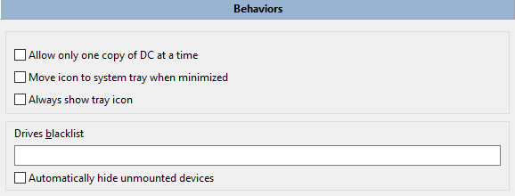
Nur eine Kopie von DC gleichzeitig erlauben – Wenn aktiviert, kann nur eine Kopie des Programms laufen. Wenn Sie versuchen, eine zweite Kopie von Double Commander zu starten, wird die erste Kopie aktiviert.
Symbol beim Minimieren in den Infobereich verschieben – Minimiert zeigt Double Commander sein Symbol im Infobereich (Benachrichtigungsbereich) statt im Panel (oder in der Windows-Taskleiste).
Infobereichssymbol immer anzeigen – Wenn aktiviert, zeigt es zusätzlich zur Fensterschaltfläche von Double Commander im Panel (oder in der Windows-Taskleiste) das Symbol im Infobereich.
Laufwerkssperrliste – Damit blenden Sie bestimmte Laufwerke im Menü des Laufwerkspanels aus. Jeder Eintrag muss den vollständigen Pfad zum Laufwerk bzw. Einhängepunkt enthalten. Mehrere Laufwerke mit Semikolons „;“ ohne Leerzeichen trennen. Beispiele: /media/cdrom;/mnt/win_c (Linux) oder a:\;b:\;d:\ (Windows). Unter Unix/Linux können Sie außerdem eine Maske mit Platzhaltern verwenden, Beispiel für AppImage-Dateien: /tmp/.mount_*. Ausgeblendete Laufwerke bleiben erreichbar, zum Beispiel können Sie sie über das Menü der Verzeichnis-Favoriten öffnen oder den Pfad von Hand ändern.
Nicht eingehängte Geräte automatisch ausblenden – Ein nicht eingehängtes Gerät wird automatisch aus der Laufwerksschaltflächenleiste und aus der Laufwerksliste entfernt.
Dieser Abschnitt enthält die Einstellungen der eingebauten Werkzeuge von Double Commander (Editor (F4), Dateibetrachter (F3) und Dateivergleich) sowie Befehle zum Starten des Terminals.
Sie können externe Programme zum Bearbeiten, Betrachten und zum Suchen von Unterschieden angeben. Diese externen Programme werden statt der internen Werkzeuge verwendet.
2.3.1. Werkzeuge > Dateibetrachter
In diesem Abschnitt gibt es zwei Gruppen von Parametern:
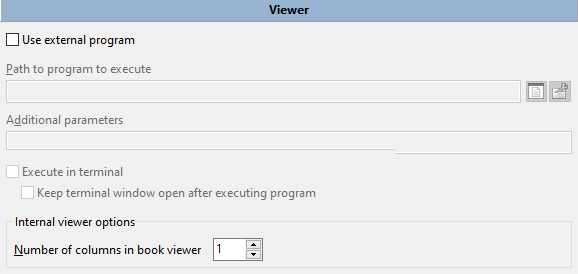
Die erste Gruppe erlaubt es, ein externes Programm zum Betrachten von Dateien anzugeben. Double Commander hängt den vollständigen Dateinamen bei jedem Aufruf des Dateibetrachters automatisch als letzten Startparameter an.
Zusätzlich: Im Terminal ausführen und Terminalfenster nach dem Ausführen des Programms offen halten können nützlich sein, wenn Sie ein Konsolenprogramm verwenden und/oder die Terminalausgabe des Programms wichtig ist (oder nur vorübergehend zur Fehlersuche).
Die nächste Parametergruppe ist Optionen des internen Dateibetrachters, fast alle Parameter und Schalter sind jedoch im Fenster des eingebauten Dateibetrachters verfügbar.
Anzahl der Spalten im Buchbetrachter – die Beschreibung dieses Modus finden Sie hier.
Es gibt außerdem mehrere Parameter, die sich nur von Hand in der Konfigurationsdatei doublecmd.xml ändern lassen.
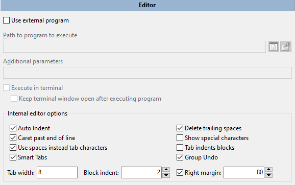
Die erste Parametergruppe erlaubt es, ein externes Programm zum Bearbeiten von Textdateien anzugeben. Double Commander hängt den vollständigen Dateinamen bei jedem Aufruf des Editors automatisch als letzten Startparameter an.
Zusätzlich: Im Terminal ausführen und Terminalfenster nach dem Ausführen des Programms offen halten können nützlich sein, wenn Sie ein Konsolenprogramm verwenden und/oder die Terminalausgabe des Programms wichtig ist (oder nur vorübergehend zur Fehlersuche).
Optionen des internen Editors:
Automatisch einrücken – Rückt die Einfügemarke ein, wenn mit Enter eine neue Zeile erzeugt wird, und übernimmt dabei denselben führenden Leerraum wie die vorherige Zeile.
Nachgestellte Leerzeichen löschen – Löscht nachgestellte Leerzeichen automatisch, gilt nur für bearbeitete Zeilen.
Einfügemarke hinter dem Zeilenende – Erlaubt der Einfügemarke, in den leeren Bereich hinter der Position des Zeilenendes zu gehen.
Sonderzeichen anzeigen – Zeigt Sonderzeichen für Leerzeichen und Tabulatoren.
Leerzeichen statt Tabulatorzeichen verwenden – Wandelt Tabulatorzeichen beim Eingeben in eine festgelegte Anzahl von Leerzeichen um.
Tabulator rückt Blöcke ein – Wenn aktiviert, wirken Tab und Shift+Tab bei ausgewähltem Text als Block einrücken und ausrücken.
Intelligente Tabulatoren – Beim Drücken der Taste Tab springt die Einfügemarke zum nächsten Zeichen, das kein Leerzeichen ist, in der vorherigen Zeile.
Gruppiertes Rückgängig – Wenn aktiviert, werden alle aufeinanderfolgenden Änderungen derselben Art in einem Aufruf des Befehls Rückgängig oder Wiederholen verarbeitet, statt jede einzelne Textänderung einzeln rückgängig zu machen oder zu wiederholen.
Tabulatorbreite – Die Breite des Tabulatorzeichens (in Anzahl der Zeichen). Ist Leerzeichen statt Tabulatorzeichen verwenden aktiviert, fügt die Taste Tab die angegebene Anzahl Leerzeichen ein. Diese Einstellung gilt nicht, wenn die Option Intelligente Tabulatoren aktiviert ist.
Blockeinzug – legt fest, um wie viele Zeichen der Einzug zunimmt oder abnimmt, wenn die entsprechenden Befehle verwendet werden.
Rechter Rand – Markierung der Zeilenlänge, eine dünne senkrechte Linie an der angegebenen Position: Zeilen werden nicht mit einem erzwungenen Zeilenumbruch abgeschnitten, es ist nur ein visueller Hinweis. Nützlich, wenn empfohlen wird, die Länge von Zeichenketten zu begrenzen (zum Beispiel 80 oder 120 Zeichen).
2.3.2.1. Werkzeuge > Editor > Hervorhebungen
Für den eingebauten Editor wird die Komponente SynEdit verwendet. Einige Einstellungen der Syntaxhervorhebungsregeln, die zu SynEdit gehören, sind in diesem Abschnitt verfügbar.
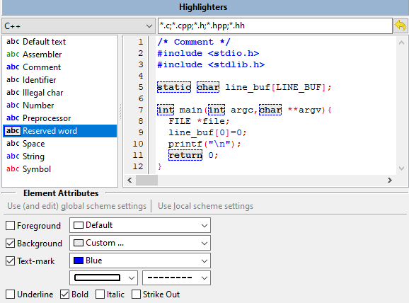
Oben im Fenster gibt es ein Aufklappmenü mit Dateitypen (einfacher Text, Programmier- und Auszeichnungssprachen) und ein Feld für die Liste der Dateierweiterungen. Schaltflächen:
Speichern – speichert die Änderungen in der Liste der Dateierweiterungen.
Zurücksetzen – setzt die Liste auf den Standardwert zurück.
Links im Fenster steht eine Liste der verfügbaren Elemente für den gewählten Dateityp, rechts ein Vorschaubereich.
Sie können Text- und Hintergrundfarbe sowie den Schriftstil (unterstrichen, fett, kursiv und durchgestrichen) für Schlüsselwörter, Zeichenketten, Zahlen, Operatoren und so weiter ändern. Für den Standardtext sind nur Text- und Hintergrundfarbe verfügbar.
Textmarkierung dient dazu, einen Rahmen um das Element zu legen: Sie können die Farbe, die Art des Rahmens und die Art der Linie wählen.
Globale Schemaeinstellungen verwenden (und bearbeiten) und Lokale Schemaeinstellungen verwenden gelten nur für den Standardtext: Sie können die Farben für alle Dateitypen auf einmal ändern oder nur für einige.
Alle Einstellungen werden in der Datei colors.json gespeichert.
Hinweis: Mögliche Wege, das Einlesen von Dateien (syntaktische Analyse), Schlüsselwortlisten und so weiter zu ändern (zu korrigieren oder zu verbessern):
Außerdem verwendet Double Commander die Komponente SynUniHighlighter für die Syntaxhervorhebung, Einzelheiten stehen in den häufig gestellten Fragen.
Fast alle Parameter und Schalter sind im Fenster des eingebauten Vergleichs verfügbar, in diesem Abschnitt gibt es nur zwei Parametergruppen.
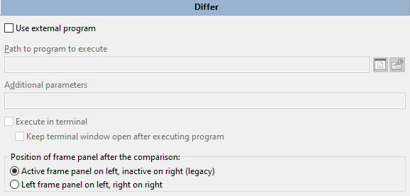
Die erste Gruppe erlaubt es, ein externes Programm zum Dateivergleich anzugeben. Double Commander hängt die vollständigen Dateinamen bei jedem Aufruf des Vergleichswerkzeugs automatisch als letzte Startparameter an.
Zusätzlich: Im Terminal ausführen und Terminalfenster nach dem Ausführen des Programms offen halten können nützlich sein, wenn Sie ein Konsolenprogramm verwenden und/oder die Terminalausgabe des Programms wichtig ist (oder nur vorübergehend zur Fehlersuche).
Position des Panels nach dem Vergleich – legt die Reihenfolge fest, in der die Dateinamen an das Vergleichsprogramm (eingebaut oder extern) übergeben werden:
Aktives Panel links, inaktives rechts – Die Datei aus dem aktiven Dateipanel wird im linken Panel des Vergleichsprogramms geöffnet, die zweite Datei im rechten Panel.
Linkes Panel links, rechtes rechts – Die Datei aus dem linken Dateipanel wird im linken Panel des Vergleichsprogramms geöffnet, die zweite Datei im rechten Panel.
Sind im aktiven Panel zwei Dateien ausgewählt, wird die erste Datei im linken Panel des Vergleichsprogramms geöffnet.
Dieser Abschnitt enthält Parameter zum Starten des Terminals:
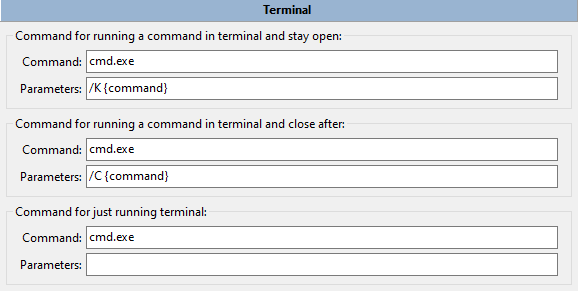
Die ersten beiden Gruppen dienen dazu, Befehle im Terminal auszuführen (um die Position der auszuführenden Befehle in der Befehlszeile anzugeben, verwenden Sie {command} im Parameterfeld). Sie können in Schaltflächen der Werkzeugleiste, in internen Dateizuordnungen und zum Starten externer Anwendungen verwendet werden, die den eingebauten Texteditor, den Dateibetrachter und das Dateivergleichswerkzeug ersetzen. Diese Aktionen können Sie dem Dateikontextmenü hinzufügen (dem Untermenü „Aktionen“).
Außerdem wird die erste Gruppe verwendet, um eine Datei unter dem Cursor mit Shift+Enter im Terminal zu öffnen und einen Befehl aus der Befehlszeile auszuführen (ist jedoch das Terminalfenster aktiviert, wird der Befehl darin ausgeführt).
Die dritte Gruppe erlaubt es, den Befehl anzugeben, der ausgeführt wird, wenn das Terminal aufgerufen wird (interner Befehl cm_RunTerm, standardmäßig F9).
Standardwerte:
Windows: cmd.exe
macOS: Double Commander erkennt automatisch das in den Systemeinstellungen angegebene Programm.
Linux und andere Unix-ähnliche Systeme:
Für Debian und auf Debian aufbauende Distributionen (Ubuntu, Linux Mint, antiX, Devuan und andere) wird x-terminal-emulator verwendet: Das ist eine symbolische Verknüpfung auf das Terminal, das in diesen Systemen standardmäßig verwendet wird.
Andernfalls versucht Double Commander, den Wert aus den Einstellungen der Arbeitsumgebung zu lesen: Cinnamon, GNOME, KDE, LXDE, LXQt, MATE oder Xfce.
Schlägt die automatische Erkennung fehl, verwendet Double Commander xterm.
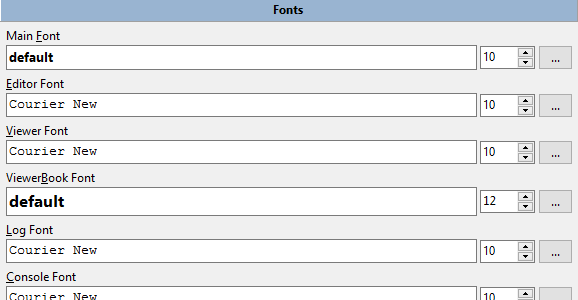
Sie können Schriftarten für den Editor (F4), den Dateibetrachter (F3), die Dateipanels (Hauptschrift) und andere Elemente der Oberfläche von Double Commander wählen, außerdem ihre Größe. Die untere Zeile bei jedem Eintrag zeigt, wie die gewählte Schrift dargestellt wird. Ein wichtiger Hinweis: Die Schriften für Editor und Dateibetrachter müssen DICKTENGLEICH sein. Die Abbildung unten zeigt oben eine Proportionalschrift (achten Sie auf die merkwürdigen Abstände) und unten eine dicktengleiche Schrift, die richtig ausgerichtet erscheint. Bei manchen Proportionalschriften können sich die Zeichen außerdem überdecken und recht merkwürdig aussehen.
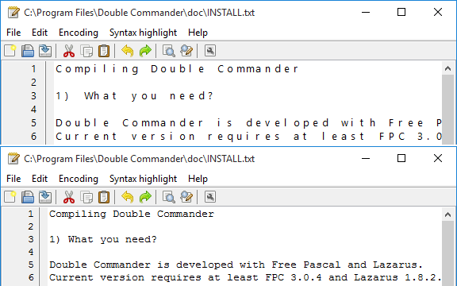
Oben eine normale (proportionale) Schrift, unten eine dicktengleiche.
Außerdem können Sie mit Ctrl und dem Mausrad die Schriftgröße ändern, Einzelheiten stehen im Abschnitt Maus.
Sie können auch die Art der Schriftrasterung wählen (unabhängig von den Systemeinstellungen), siehe die Beschreibung von <Quality>.
Dieser Abschnitt enthält Farbeinstellungen, die nicht in anderen Einstellungsabschnitten enthalten sind. Die Parameter sind nach Kategorien gruppiert.
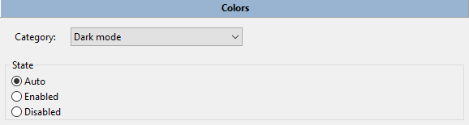
1. Dunkler Modus – aktiviert oder deaktiviert die Unterstützung des dunklen Modus (nur macOS und Windows 10 1809 und neuer). Zustand:
Automatisch – die Systemeinstellungen werden verwendet.
Aktiviert – zwangsweise einschalten.
Deaktiviert – zwangsweise ausschalten.
2. Dateibetrachter – Farbeinstellungen, die der eingebaute Dateibetrachter verwendet (Beschreibung der Ansichtsmodi hier):
Buchmodus – für den Ansichtsmodus „Buch“ können Sie die Textfarbe und die Hintergrundfarbe festlegen.
Bildmodus:
Hintergrund 1: – legt die Hintergrundfarbe des Fensters beim Betrachten von Bildern fest.
Hintergrund 2: – ist Transparenz anzeigen aktiviert, kennzeichnet der interne Dateibetrachter Transparenz durch ein Schachbrettmuster als Hintergrund, und Hintergrund 2 legt die Farbe der Quadrate fest. Ist nichts gesetzt, berechnet der Dateibetrachter den Wert automatisch: Bei dunklem Hintergrund werden helle Quadrate verwendet und umgekehrt.
3. Vergleich – für das interne Vergleichswerkzeug: Sie können die Farben für hinzugefügte, gelöschte und geänderte Zeilen ändern sowie die Farbe für unterschiedliche Zeichen im Binärmodus.
4. Protokoll – Optionen, die die Textfarben im Protokollfenster für Hinweis-, Fehler- und Erfolgsmeldungen festlegen. Diese Farben werden auch im Fenster mit dem Ergebnis der Prüfsummenprüfung verwendet.
5. Verzeichnisse synchronisieren – für das interne Werkzeug zur Verzeichnissynchronisierung:
Links: – Dateien, die links zum Kopieren oder Löschen ausgewählt sind.
Rechts: – Dateien, die rechts zum Kopieren oder Löschen ausgewählt sind.
Unbekannt: – Dateien mit denselben Namen, die aber nicht identisch sind.
Auswahl: – Hintergrundfarbe für die Datei unter dem Cursor oder für ausgewählte Dateien.
6. Anzeige des freien Speicherplatzes – hier können Sie das Aussehen der Anzeige des freien Speicherplatzes ändern:
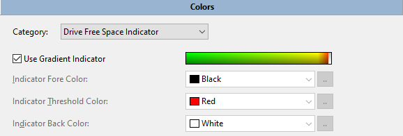
Double Commander kann einen Farbverlauf (von Grün nach Rot) oder eine einfache einfarbige Anzeige darstellen; im zweiten Fall können Sie die Farbe und den Hintergrund wählen. Schwellenfarbe der Anzeige wird verwendet, wenn der freie Speicherplatz unter 10 % liegt.
Das Anzeigebeispiel ist anklickbar, sodass Sie sehen können, wie es aussehen wird.
Dieser Abschnitt enthält Einstellungen für das Aussehen der Dateipanels:
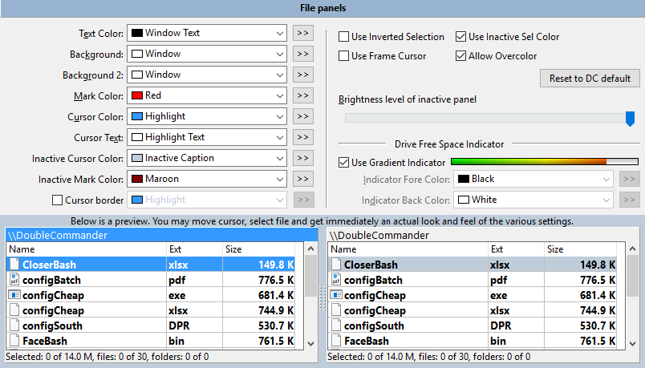
Die Farbeinstellungen hier sind globale Einstellungen für beide Dateipanels. Diese Einstellungen lassen sich überschreiben, indem Sie einen eigenen Spaltenstil anlegen, der eigene Farbeinstellungen und mehr für jede Registerkarte im Panel haben kann! Siehe Dateiansichten > Spalten > Benutzerdefinierte Spalten, wie das geht. Sie sollten den aktuellen Spaltenstil anpassen (Standard ist voreingestellt) oder einen eigenen Stil anlegen und ihn auf eine beliebige Registerkarte anwenden.
Hier können Sie Farben wählen, mit denen die Dateipanels dargestellt werden: Textfarbe, Hintergrund, Hintergrund 2, Markierungsfarbe, Cursorfarbe, Cursortext, Inaktive Cursorfarbe, Inaktive Markierungsfarbe und außerdem Cursorrand (wenn Sie keinen Rahmenzeiger verwenden). Mit den beiden Hintergrundoptionen können Sie in den Panels abwechselnde Streifen erzeugen, wie auf manchen Bildschirmfotos.
Invertierte Auswahl verwenden – kehrt die Farben von markiertem Text und von markiertem Text unter dem Cursor um.
Inaktive Auswahlfarbe verwenden – zeigt den Cursor auch im inaktiven Panel an.
Rahmenzeiger verwenden – Double Commander verwendet einen Rahmen statt eines ausgefüllten Rechtecks.
Überfärben erlauben schaltet die Möglichkeit ein, für Dateinamen eine andere Farbe als die Standardfarbe zu verwenden (siehe Abschnitt Farben > Dateitypen).
In der Parametergruppe Aktueller Pfad können Sie Textfarbe und Hintergrundfarbe der Leiste des aktuellen Verzeichnisses für das aktive und das inaktive Dateipanel ändern.
Außerdem können Sie hier die Helligkeit des inaktiven Panels verringern.
Unten im Fenster gibt es einen Vorschaubereich, sodass Sie alle Änderungen auf einmal sehen.
Die Schaltfläche Auf DC-Standard zurücksetzen setzt alle Parameter auf ihre Standardwerte zurück.
Die Gitterfarbe lässt sich ebenfalls ändern, aber nur von Hand. Sie müssen die Anwendung schließen, die Datei colors.json öffnen und den Wert des Schlüssels GridLine im Objekt FilePanel ersetzen. (Denken Sie daran, dass die Farben in colors.json in zwei Profilen gespeichert sind: „Light“ für helle Themen und „Dark“ für dunkle Themen.)
Zum Farbformat: Double Commander speichert Farbwerte im Format $BBGGRR als Dezimalzahl. Wenn Sie zum Beispiel die Indigofarbe #4B0082 ($RRGGBB) verwenden möchten, stellen Sie die Bytes um, Sie erhalten 82004B, und diese Hexadezimalzahl müssen Sie nun ins Dezimalsystem umrechnen. Oder Sie fügen vorübergehend eine Farbe für einen Dateityp hinzu (siehe unten), suchen sie in colors.json nach Name oder Maske, kopieren den Wert und löschen den Eintrag wieder.
Hier können Sie Dateitypen angeben, die eine andere Farbe erhalten sollen. Der Parameter Überfärben erlauben muss aktiviert sein (standardmäßig aktiviert).
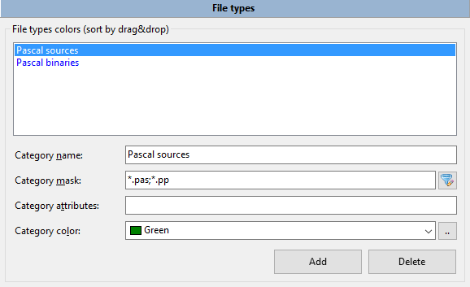
In der Zeile Kategoriename können Sie eine Beschreibung der Datei eintragen, was sie tut oder welches Programm sie öffnet.
In der Zeile Kategoriemaske tragen Sie eine Platzhaltermaske ein, die zu den Dateitypen passt (das Zeichen „*“ steht für eine beliebige Anzahl von Zeichen, das Zeichen „?“ für genau ein Zeichen). Sie können hier mehrere Dateitypen mit einem Semikolon „;“ ohne Leerzeichen dazwischen eintragen. Außerdem können Sie Suchvorlagen verwenden ( ), einschließlich der Suche mit Inhalts-Plugins.
), einschließlich der Suche mit Inhalts-Plugins.
In der Zeile Kategorieattribute können Sie Dateiattribute eintragen, und DC passt auf alle Dateien, deren Attribute übereinstimmen (nicht verfügbar, wenn eine Suchvorlage verwendet wird). Dateiattribute werden durch folgende Vorlagen angegeben:
Windows: [d oder l]rahs[c oder e]tp
Unix/Linux: [b, c, d, f, l oder s]rwxrwxrwx
das heißt, die Vorlage muss zur Attributzeichenkette in der Dateiliste passen. Beschreibung der Werte:
| Attribute unter Windows | |
|---|---|
| Attributbuchstabe | Bedeutung |
a | Archiv |
c | komprimiert (NTFS-Komprimierung) |
d | Verzeichnis |
e | verschlüsselt (EFS-Verschlüsselung) |
h | versteckt |
l | symbolische Verknüpfung |
p | sparse |
r | schreibgeschützt |
s | System |
t | temporär |
| Attribute unter Unix/Linux (Dateitypen) | |
|---|---|
| Buchstaben der Dateitypen | Bedeutung |
b | Blockgerät |
c | Zeichengerät |
d | Verzeichnis |
f | benannte Pipe (FIFO) |
l | symbolische Verknüpfung |
s | Socket |
Der zweite Teil der Unix/Linux-Vorlage zeigt die Rechte: lesen (r), schreiben (w), ausführen (x). Die Werte sind in Dreiergruppen in dieser Reihenfolge zusammengefasst: Benutzer (Eigentümer), Gruppe des Benutzers, alle anderen.
Soll ein Attribut nicht gesetzt sein, muss es durch das Zeichen „-“ ersetzt werden, unnötige Attribute sollen ausgeblendet werden: Das Zeichen „*“ steht für eine beliebige Anzahl von Zeichen, das Zeichen „?“ für genau ein Zeichen. Zum Beispiel findet ?r* (Windows) oder ?r-* (Linux) alle schreibgeschützten Dateien und Ordner.
Sie können eine Farbe aus der Liste verwenden oder über die Schaltfläche „..“ eine eigene angeben.
Double Commander prüft die Liste von oben nach unten bis zur ersten Übereinstimmung: Eine weiter oben stehende Regel überdeckt jede Regel darunter.
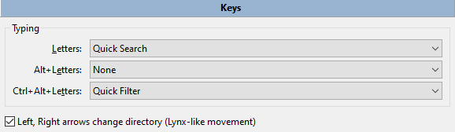
Hier können Sie die Aktion beim Drücken einiger Tasten im aktiven Dateipanel festlegen: Buchstaben, Alt+Buchstaben, Ctrl+Alt+Buchstaben. Sie können eine der folgenden Aktionen wählen: nichts tun, den Fokus auf die Befehlszeile setzen und den Befehl eingeben,
Schnellsuche oder Schnellfilter starten.
Pfeiltasten links und rechts wechseln das Verzeichnis (Bewegung wie bei Lynx) – right arrow öffnet das Verzeichnis oder startet das Programm unter dem Cursor, left arrow öffnet das übergeordnete Verzeichnis (nur im vollen Modus).
In diesem Abschnitt können Sie Tasten zum Starten von Befehlen festlegen und außerdem Parameter für diese Befehle angeben.
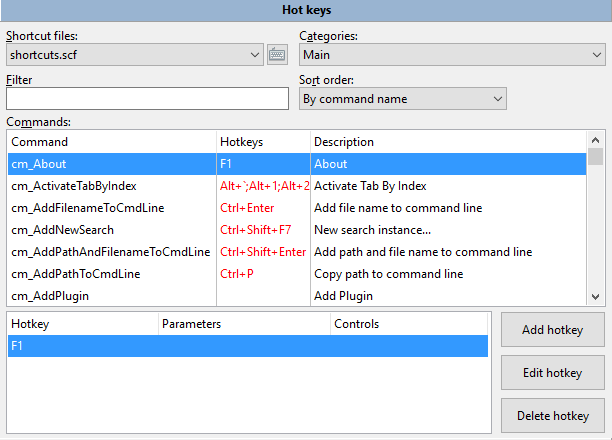
Tastenkürzeldateien – Ein Aufklappmenü mit einer Liste von Dateien mit einem Satz von Tastenkürzeln. Sie liegen im Verzeichnis mit den Programmeinstellungsdateien.
Rechts liegt die Schaltfläche des dateibezogenen Menüs:
Aktionen mit der aktuellen Datei: Jetzt speichern, Umbenennen, Kopieren und Löschen.
DC-Standard wiederherstellen.
Befehle zum Wechsel zur vorherigen und nächsten Kategorie.
Befehle zum Umschalten der Sortierreihenfolge der Befehlstabelle (siehe unten).
Kategorien – zeigt die Kategorie der Tastenkürzel: Haupt, Dialog Kopieren/Verschieben, Vergleich, Dialog Kommentar bearbeiten, Editor, Dateien suchen, Mehrfach-Umbenennen, Verzeichnisse synchronisieren, Dateibetrachter.
Filter – ermöglicht es, die internen Befehle schneller zu suchen.
Sortierreihenfolge – schaltet die Sortierreihenfolge der Befehlstabelle um:
Nach Befehlsname.
Nach Tastenkürzel (gruppiert) – Sind mehrere Tastenkürzel zugewiesen, werden sie durch ein Semikolon „;“ getrennt aufgeführt.
Nach Tastenkürzel (eines pro Zeile).
Befehle – Liste der verfügbaren internen Befehle in Double Commander. Die Liste wird als Tabelle mit drei Spalten angezeigt:
Befehl (Name des internen Befehls).
Tastenkürzel (zugewiesene Kürzel).
Beschreibung (eine kurze Beschreibung).
Die Tabelle unten im Fenster zeigt die zugewiesenen Tastenkürzel, Parameter und Oberflächenelemente (siehe unten) für den gewählten Befehl.
Tastenkürzel hinzufügen – öffnet ein Fenster zum Hinzufügen von Tastenkürzeln.
Tastenkürzel bearbeiten – öffnet dasselbe Fenster, aber mit bereits gesetztem Tastenkürzel und den übrigen Optionen.
Tastenkürzel löschen – löscht das in der Liste gewählte Tastenkürzel.
Ein Fenster zum Hinzufügen von Tastenkürzeln:
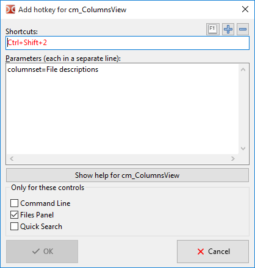
Tastenkürzel – das neue Tastenkürzel wird hier angezeigt. Klicken Sie in das Feld und drücken Sie die Kombination auf der Tastatur, um das neue Tastenkürzel einzugeben. Wird die neue Kombination bereits für einen anderen Befehl verwendet, zeigt Double Commander eine Warnung.
Parameter (jeder in einer eigenen Zeile): – erlaubt es, einige Parameter für den Befehl festzulegen. Die meisten Parameter müssen als Parameter=Wert hinzugefügt werden (sofern nichts anderes angegeben ist), jeder in einer eigenen Zeile, ohne Anführungszeichen und ohne andere Arten, Sonderzeichen und Leerzeichen zu schützen. Die Schaltfläche darunter öffnet eine Beschreibung des Befehls in der zugehörigen Hilfedatei von Double Commander.
Nur für diese Steuerelemente – Das Tastenkürzel wirkt nur, wenn das gewählte Oberflächenelement den Fokus hat: Befehlszeile, Dateien oder Schnellsuchpanel.
Rechts im Fenster liegen folgende Schaltflächen:
Die Schaltfläche F1 zeigt ein Menü mit einer Liste freier verfügbarer Tastenkürzel, gruppiert nach Alphabet und Zusatztasten.
Die Schaltfläche „+“ fügt ein weiteres Feld für das Tastenkürzel hinzu (bis zu fünf).
Die Schaltfläche „-“ löscht das letzte Tastenkürzel aus der Liste.
Sie können einem internen Befehl auf zwei Wegen mehrere Tastenkürzel zuweisen: die Schaltfläche Tastenkürzel hinzufügen und danach mehrmals die Schaltfläche „+“ verwenden oder die Schaltfläche Tastenkürzel hinzufügen mehrmals. Der zweite Weg erlaubt es, den gewählten Befehl mit unterschiedlichen Parametern zu verwenden.
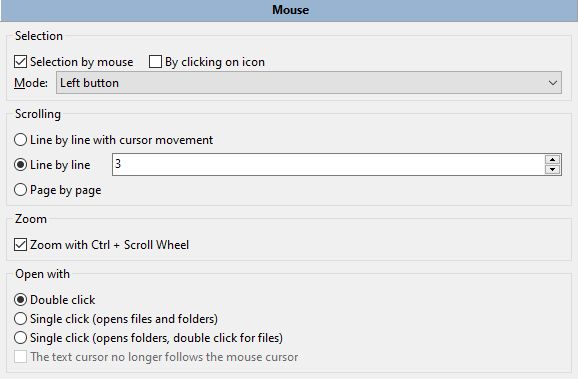
Die erste Parametergruppe ist Auswahl:
Auswahl mit der Maus – schaltet die Möglichkeit ein, Dateien und Ordner mit der Maus auszuwählen und die Auswahl aufzuheben.
Durch Klick auf das Symbol – erlaubt es, Dateien mit einem Mausklick auf ihre Symbole auszuwählen. Die Auswahl durch Klick auf das Symbol in der Miniaturansicht wirkt, wenn Sie auf den linken Teil (1/4 oder 25 %) des Bildes klicken.
Modus – legt die linke oder rechte Maustaste fest.
Einzelheiten stehen im Unterabschnitt Dateien auswählen.
Blättern – die Möglichkeit, mit dem Mausrad durch die Dateiliste in den Panels zu blättern:
Zeile für Zeile mit Cursorbewegung – der Cursor bewegt sich im Panel nach oben oder unten, bevor geblättert wird.
Zeile für Zeile – der Cursor bleibt auf der Datei und das Blättern beginnt sofort. Sie können außerdem die Anzahl der Zeilen angeben.
Seite für Seite – wie zuvor, aber es wird seitenweise statt zeilenweise geblättert (deutlich schnelleres Blättern).
Zoom – Double Commander erlaubt es, mit Ctrl und dem Mausrad die Schriftgrößen zu ändern. Das gilt für folgende Oberflächenelemente oder Programmteile:
Dateiliste im linken und rechten Panel;
Leiste des aktuellen Verzeichnisses (Adressleiste);
Leiste der Funktionstastenschaltflächen;
Baumansichtsmenü;
Suchergebnisse im Dialog Dateien suchen;
interner Dateibetrachter (wenn der Dateibetrachter Text zeigt);
interner Editor.
Zoom mit Ctrl + Mausrad – schaltet diese Funktion ein oder aus.
Öffnen mit – legt fest, was die Aktion auslöst, wenn Sie die Maustaste auf einem Element der angezeigten Dateiliste in einem Panel verwenden:
Ein Doppelklick ist nötig, um die Aktion auszulösen (Standard).
Ein einfacher Klick öffnet Dateien und Ordner.
Ein einfacher Klick öffnet nur Ordner. Für Dateien ist ein Doppelklick nötig.
Der Textcursor folgt dem Mauszeiger nicht mehr – gilt für die letzten beiden Werte. Ist der einfache Klick aktiviert, folgt der Textcursor standardmäßig dem Mauszeiger: Das hilft, Dateien oder Ordner nicht versehentlich zu öffnen. Sie können es abschalten, wenn Sie es nicht brauchen (oder nicht mögen).
2.7.1. Maus > Ziehen und Ablegen
Dieser Abschnitt enthält Einstellungen zum Ziehen und Ablegen.
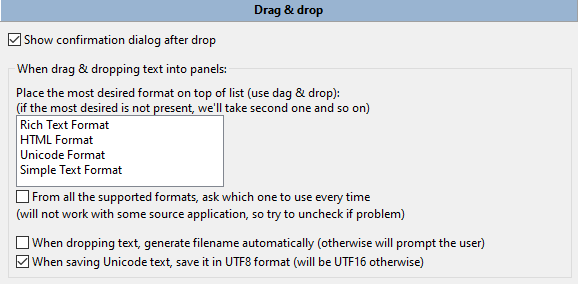
Bestätigungsdialog nach dem Ablegen anzeigen – hilft, versehentliche Fehler zu vermeiden, wenn Dateien innerhalb des aktiven Dateipanels oder zwischen Panels gezogen und abgelegt werden: Double Commander zeigt einen Bestätigungsdialog wie beim normalen Kopieren oder Verschieben von Dateien.
Die nächste Funktion gibt es nur unter Windows: Sie können in einem Webbrowser oder einer Textverarbeitung (zum Beispiel LibreOffice Writer oder Microsoft Word) ausgewählten Text auf das Panel ziehen und speichern. Hier können Sie das Dateiformat (RTF, HTML oder einfache Textdatei), die Kodierung wählen und die automatische Namenserzeugung einschalten.
In diesem Abschnitt können Sie verschiedene Optionen zur Dateisortierung sowie Formate für Datum/Uhrzeit und Größe festlegen.
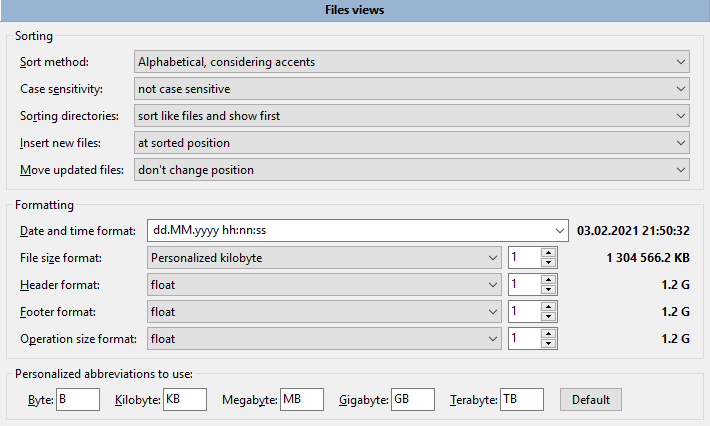
Sortiermethode – legt die Sortiermethode in den Dateipanels fest:
Alphabetisch, unter Berücksichtigung von Akzenten – Diese Methode sortiert alphabetisch und berücksichtigt die Besonderheiten der Systemsprache und der regionalen Einstellungen: Auch zusätzliche Zeichen werden berücksichtigt (zum Beispiel Umlaut und andere diakritische Zeichen in germanischen Sprachen oder der Buchstabe „ё“ im Russischen).
Alphabetisch mit Sortierung von Sonderzeichen – Wie die vorherige Methode, zusätzlich wird die Liste nach Sonderzeichen und Satzzeichen vor den Buchstaben sortiert.
Natürliche Sortierung: alphabetisch und Zahlen – Diese Methode sortiert Ziffern als Zahlen: Zum Beispiel wird „3“ vor „20“ angezeigt, weil 20 größer als 3 ist.
Natürlich mit Sortierung von Sonderzeichen – Wie die vorherige Methode, aber zusätzlich mit Sortierung nach Sonderzeichen und Satzzeichen.
Groß-/Kleinschreibung – ergänzt die gewählte Methode:
ohne Berücksichtigung der Groß-/Kleinschreibung;
gemäß den Locale-Einstellungen (aAbBcC);
zuerst Groß-, dann Kleinbuchstaben (ABCabc).
Verzeichnisse sortieren – legt die Position der Verzeichnisse in der Dateiliste fest:
nach Name sortieren und zuerst anzeigen;
wie Dateien sortieren und zuerst anzeigen;
wie Dateien sortieren.
Neue Dateien einfügen – legt die Position der neuen Datei in der Liste fest:
am Anfang der Dateiliste;
nach den Verzeichnissen (wenn Verzeichnisse vor Dateien sortiert werden);
an der sortierten Position;
am Ende der Dateiliste.
Aktualisierte Dateien verschieben – legt die Position fest, wenn die derzeit zum Sortieren verwendete Dateieigenschaft geändert wurde (Änderungsdatum, Größe usw.):
Position nicht ändern;
dieselbe Einstellung wie für neue Dateien verwenden;
an die sortierte Position.
Der erste Parameter in der Gruppe Formatierung ist Datums- und Uhrzeitformat. Sie können eine der vorhandenen Vorlagen aus der Aufklappliste wählen oder eine eigene mit Formatzeichen für Datum und Uhrzeit festlegen.
Die Formatzeichen sind unten aufgeführt (nach der Dokumentation von Free Pascal). Einige Werte hängen von den regionalen Einstellungen des Betriebssystems ab!
Als Beispiel verwenden wir 2021.01.24 09:06:02 (also yyyy.mm.dd hh:mm:ss) und die Region USA.
| Mögliche Zeichen | ||
|---|---|---|
| Zeichen | Beschreibung | Beispiel |
c | kurzes Datumsformat und langes Uhrzeitformat, wenn die Uhrzeit nicht null ist | 1/24/2021 9:06:02 |
f | wie c, fügt die Uhrzeit aber auch hinzu, wenn sie null ist | 1/24/2021 9:06:02 |
d | Tag des Monats | 24 |
dd | Tag des Monats (führende Null) | 24 |
ddd | Wochentag (Abkürzung) | Sun |
dddd | Wochentag (ausgeschrieben) | Sunday |
ddddd | kurzes Datumsformat | 1/24/2021 |
dddddd | langes Datumsformat | Sunday, January 24, 2021 |
m | Monat oder Minuten, wenn ein Bezeichner h oder hh vorausgeht | 1 |
mm | Monat oder Minuten, wenn ein Bezeichner h oder hh vorausgeht, mit führender Null | 01 |
mmm | Monat (Abkürzung) | Jun |
mmmm | Monat (ausgeschrieben) | January |
yy | Jahr (zwei Stellen) | 21 |
yyyy | Jahr (mit Jahrhundert) | 2021 |
h | Stunde | 9 |
hh | Stunde (führende Null) | 09 |
n | Minute | 6 |
nn | Minute (führende Null) | 06 |
s | Sekunde | 2 |
ss | Sekunde (führende Null) | 02 |
z | Millisekunden | 1 |
zzz | Millisekunden (führende Null) | 001 |
t | kurzes Uhrzeitformat | 9:06 |
tt | langes Uhrzeitformat | 9:06:02 |
am/pm | 12-Stunden-Uhr verwenden und am und pm entsprechend anzeigen (auch AM/PM, a/m oder A/M); zum Beispiel t AM/PM | 9:06 am |
/ | Datumstrennzeichen einfügen | / |
: | Uhrzeittrennzeichen einfügen | : |
"text" | fester Text; zum Beispiel yyyy "AD" | 2021 AD |
Die nächsten Parameter legen das Format der Dateigröße fest:
Format der Dateigröße – wird in den Dateipanels verwendet.
Format der Kopfzeile – wird in der Laufwerksliste und in der Anzeige des freien Speicherplatzes verwendet.
Format der Fußzeile – wird in der Statusleiste der Dateipanels verwendet.
Format der Operationsgröße – wird in den Dialogen der Dateioperationen verwendet: Kopieren, Verschieben, Prüfsummen berechnen und so weiter.
Rechts können Sie außerdem die Anzahl der Stellen nach dem Dezimaltrennzeichen festlegen (also dem Trennzeichen zwischen ganzzahligem und gebrochenem Teil einer Zahl): 0, 1, 2 oder 3.
Einheiten der Dateigröße: Byte, Kilobyte, Megabyte, Gigabyte, Terabyte oder Gleitkomma (Double Commander wählt die Einheit automatisch anhand der Größe).
„Personalisiert“ im Namen bedeutet, dass Double Commander die Personalisierten Abkürzungen aus der Liste unten verwendet. Die Schaltfläche Standard setzt sie auf die Standardwerte der gewählten Sprache zurück (angegeben in der entsprechenden Sprachdatei).
2.8.1. Dateiansichten > Dateiansichten extra
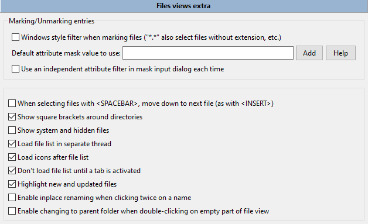
Einträge markieren/Markierung aufheben:
Filter im Windows-Stil beim Markieren von Dateien („*.*“ wählt auch Dateien ohne Erweiterung usw.) – Standardmäßig passt die Maske „*.*“ auf den Namen jeder Datei, die eine Erweiterung hat; für beliebige Dateinamen verwenden Sie die Maske „*“. Wenn aktiviert, passt die Maske „*.*“ auf jede Datei.
Standardwert der Attributmaske – wird für folgende Befehle verwendet:
Alles auswählen (cm_MarkMarkAll),
Auswahl aufheben (cm_MarkUnmarkAll),
Auswahl umkehren (cm_MarkInvert),
Gruppe auswählen (cm_MarkPlus)
und Gruppe abwählen (cm_MarkMinus).
Wenn diese Befehle zum Beispiel nur mit Dateien arbeiten sollen, geben Sie d- an.
Die Schaltfläche Hinzufügen öffnet das Fenster zur Auswahl der Dateiattribute, Sie können es verwenden oder die Attribute von Hand eingeben. Weitere Informationen zu Dateiattributen und ihrer Verwendung finden Sie hier.
Jedes Mal einen unabhängigen Attributfilter im Maskeneingabedialog verwenden – Wenn aktiviert, wird der Attributfilter den Dialogen der Befehle Gruppe auswählen (cm_MarkPlus) und Gruppe abwählen (cm_MarkMinus) hinzugefügt.
Beim Auswählen von Dateien mit <LEERTASTE> zur nächsten Datei nach unten gehen (wie mit <EINFG>) – bewegt den Cursor beim Auswählen mit der Taste Space nach unten. Die Standardtasten sind Shift+Down oder Shift+Up.
Eckige Klammern um Verzeichnisse anzeigen – hilft, Verzeichnisse optisch von Dateien zu unterscheiden, wenn Symbole ausgeschaltet sind. Sie können stattdessen beliebige Zeichen verwenden, die Beschreibung der Parameter <FolderPrefix> und <FolderPostfix> finden Sie hier.
System- und versteckte Dateien anzeigen – Wenn aktiviert, zeigt Double Commander Dateien und Ordner, die das Attribut „versteckt“ oder „System“ haben (Windows) oder deren Name mit einem Punkt beginnt (Linux und andere Unix-ähnliche Systeme). Das lässt sich auch über das Hauptmenü ändern.
Die Parameter Dateiliste in einem eigenen Thread laden und Symbole nach der Dateiliste laden sollen die Anzeige der Dateiliste im Panel beschleunigen, das heißt, das Anwendungsfenster hängt beim Öffnen großer Verzeichnisse weniger.
Dateiliste erst laden, wenn eine Registerkarte aktiviert wird – Beim Start lädt Double Commander die Dateiliste inaktiver Registerkarten nicht, die in der vorherigen Sitzung geöffnet waren.
Neue und aktualisierte Dateien hervorheben – Wenn aktiviert, blinken die Namen von Dateien, die gerade erzeugt oder geändert werden.
Umbenennen an Ort und Stelle aktivieren, wenn zweimal auf einen Namen geklickt wird – ist eine zusätzliche Möglichkeit, die Datei mit der linken Maustaste umzubenennen (unabhängig von der für die Auswahl mit der Maus gewählten Taste), wie im Windows-Explorer. Nach dem Klick muss der Mauszeiger mindestens eine Sekunde still stehen. Im Abschnitt Mauseinstellungen soll der Doppelklick für Dateien und Ordner oder nur für Dateien gewählt sein.
Wechsel in den übergeordneten Ordner aktivieren, wenn auf einen leeren Teil der Dateiansicht doppelgeklickt wird – ist eine zusätzliche Funktion, um die Navigation in Verzeichnissen zu vereinfachen. Sie gilt aber nicht, wenn Sie einen Spaltensatz verwenden und die Dateiliste im aktuellen Verzeichnis nicht ins Panel passt (das heißt, Sie sehen eine senkrechte Bildlaufleiste).
Hier gibt es nur zwei Parameter.
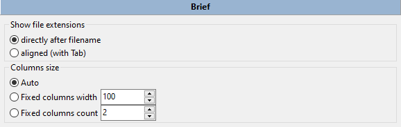
Dateierweiterungen anzeigen: direkt nach dem Dateinamen oder ausgerichtet (mit Tabulator). Im zweiten Fall werden Dateierweiterungen getrennt angezeigt, am rechten Rand der Spalten ausgerichtet.
Spaltengröße: Double Commander setzt die Größe automatisch (die Größe hängt von der Länge der Dateinamen ab), oder Sie können die Breite der Spalten (in Pixeln) oder ihre Anzahl festlegen.
2.8.3. Dateiansichten > Spalten
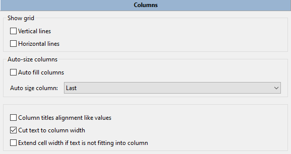
Die erste Gruppe ist Gitter anzeigen:
Senkrechte Linien – schaltet senkrechte Gitterlinien in den Panels ein.
Waagerechte Linien – schaltet waagerechte Gitterlinien in den Panels ein.
Die Bildschirmfotos unten zeigen diesen dezenten Gittereffekt. Das Bildschirmfoto links hat die senkrechten und waagerechten Linien eingeschaltet, das rechte nicht.
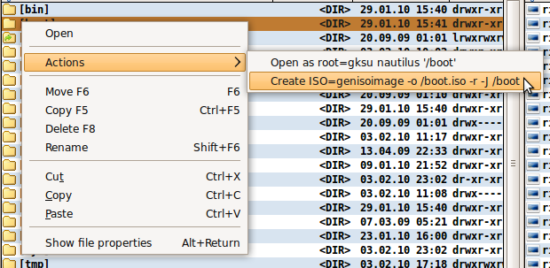
Die Farbe der Linien lässt sich ändern, weitere Einzelheiten hier.
Spalten automatisch füllen – Wenn aktiviert, ändert Double Commander beim Ändern der Fenstergröße (oder wenn freier Platz vorhanden ist) die Größe der Spalte, die in der nächsten Option Spalte automatisch anpassen: gewählt ist (erste oder letzte). Die waagerechte Bildlaufleiste steht dann nicht zur Verfügung.
Spaltenüberschriften wie die Werte ausrichten – Wenn aktiviert, richtet Double Commander die Spaltenüberschrift genauso aus wie den Inhalt (statt linksbündig).
Wenn der Inhalt der Spalte größer als ihre Breite ist:
Text auf die Spaltenbreite kürzen – Manchmal kann Spaltentext in andere Spalten hineinragen. Diese Option schneidet überschüssigen Text an der Spaltengrenze ab.
Zellenbreite erweitern, wenn der Text nicht in die Spalte passt – Passt der Text nicht und ist die benachbarte Zelle leer, belegt der Text auch die benachbarte Zelle.
2.8.3.1. Dateiansichten > Spalten > Benutzerdefinierte Spalten
In diesem Abschnitt können Sie das Aussehen des Panels, die Spalten, Farben, Schriften usw. anpassen. Double Commander lässt sich auf diese Weise sehr weitgehend einstellen.
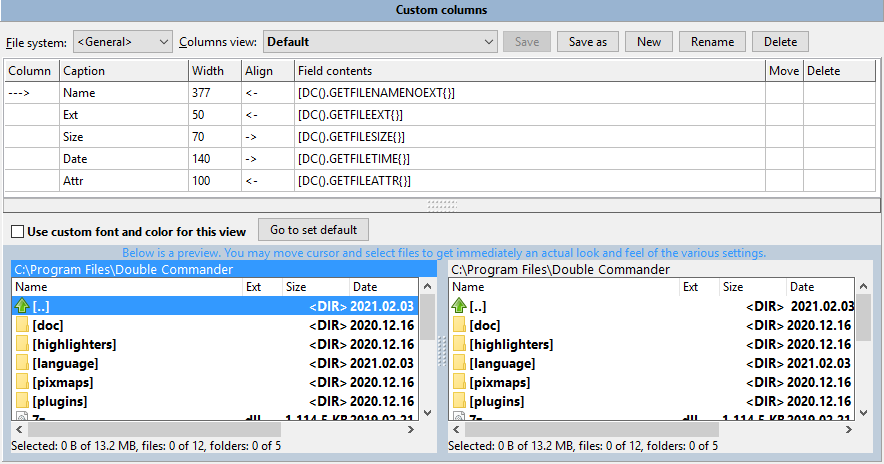
Unten im Fenster gibt es einen Vorschaubereich, sodass Sie alle Änderungen auf einmal sehen. Sie können den Cursor bewegen und Dateien auswählen, um sofort ein tatsächliches Bild der verschiedenen Einstellungen zu erhalten.
Dateisystem – erlaubt es, zu den Spalteneinstellungen für WFX-Plugins zu wechseln (wenn installierte Plugins das unterstützen).
Spaltenansicht – eine Liste vorhandener Spaltenstile. Es gibt einen Standardstil Standard.
Speichern – speichert Änderungen im gewählten Spaltensatz.
Speichern unter – erlaubt es, den gewählten Spaltensatz (unverändert oder mit Änderungen) unter einem neuen Namen zu speichern.
Neu – erzeugt einen neuen Spaltensatz auf Grundlage des gewählten. Mit demselben Namen plus aktuellem Datum und Uhrzeit.
Umbenennen – fordert zur Eingabe eines neuen Namens auf.
Löschen – löscht den gewählten Spaltensatz.
Darunter steht eine Tabelle mit den Spalten des gewählten Satzes. Hier können Sie Anzahl, Name, Inhalt, Ort und Größe der Spalten festlegen. Die Anzahl der Zeilen in der Tabelle entspricht der Anzahl der Spalten im Satz. Eine neue Spalte hinzufügen: die Taste down arrow verwenden oder mit der rechten Maustaste in den leeren Bereich neben der Tabelle klicken und Spalte hinzufügen wählen.
Das sind die Parameter, die die Tabelle für die Spalte bestimmen (zum Bearbeiten in die Felder klicken):
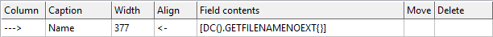
Spalte – zeigt die Kennung der gewählten Spalte.
Beschriftung – gibt den Namen der Spalte an, der in der Spaltenüberschriftenleiste angezeigt wird. Sie können jeden beliebigen Namen festlegen.
Breite – Spaltenbreite (in Pixeln), die beim Programmstart gesetzt wird. Hinweis: Die Breite hängt vom Spalteninhalt ab, zum Beispiel hat die Spalte der Dateierweiterung eine geringe Breite.
Ausrichtung – legt die Ausrichtung des Spalteninhalts fest. Varianten:
"<-" – linksbündig;
"->" – rechtsbündig;
"=" – mittig.
Feldinhalt – legt den grundlegenden Inhalt der Spalte fest. Ist eine Zelle gewählt, erscheint rechts die Schaltfläche „+“, Sie können interne Felder von Double Commander (Untermenü „DC“) oder Felder installierter WDX-Plugins (Untermenü „Plugins“) wählen. Liste der internen Felder:
GETFILENAME – Dateiname und Erweiterung (text.txt).
GETFILENAMENOEXT – Dateiname ohne Erweiterung (text).
GETFILEEXT – Dateierweiterung (vom Punkt bis zum Ende, zum Beispiel txt).
GETFILESIZE – Größe der Datei oder des Verzeichnisses. Standardmäßig hängt die Darstellung von der im Abschnitt Dateiansichten gewählten Option ab, aber alle möglichen Größenformate sind ebenfalls verfügbar.
GETFILETIME – Änderungsdatum der Datei oder des Verzeichnisses.
GETFILECREATIONTIME – Erstellungsdatum der Datei oder des Verzeichnisses.
GETFILELASTACCESSTIME – Datum des letzten Zugriffs auf die Datei oder das Verzeichnis.
GETFILECHANGETIME – Datum der Statusänderung der Datei oder des Verzeichnisses.
GETFILEATTR – Attribute der Datei oder des Verzeichnisses. Sie können einen Zeichenketten- oder einen numerischen (oktalen) Wert wählen. Unter Windows kann ein oktaler Wert verwendet werden, wenn Unix-Attribute im Dateipanel angezeigt werden (zum Beispiel mit dem FTP-Plugin). Eine ausführliche Beschreibung des Zeichenkettenwerts finden Sie hier.
GETFILEPATH – Pfad zum aktuellen Eintrag. Verwendung: meist für Suchergebnisse.
GETFILEGROUP – zeigt die Gruppe des Dateieigentümers.
GETFILEOWNER – zeigt den Eigentümer der Datei.
GETFILELINKTO – zeigt Pfad und Datei, also das Ziel dieser symbolischen Verknüpfung.
GETFILETYPE – Dateityp (wie im Windows-Explorer oder MIME-Typ).
GETFILECOMMENT – Beschreibung (Kommentar) der Datei oder des Verzeichnisses aus descript.ion (Einzelheiten hier). Dieses Feld kann auch innerhalb von Archiven verwendet werden (wenn das Archivformat das Speichern von Dateibeschreibungen unterstützt und das entsprechende externe Packprogramm so eingerichtet ist, dass es sie entgegennimmt).
GETFILECOMPRESSEDSIZE – komprimierte Dateigröße (tatsächliche Größe bei NTFS-Komprimierung).
Standardmäßig verwenden Felder mit Zeitstempeln das Datums- und Uhrzeitformat, das im Einstellungsabschnitt Dateiansichten gewählt wurde. Sie können Ihr bevorzugtes Format auch direkt in der Spalte in geschweiften Klammern angeben, mit denselben Formatzeichen für Datum und Uhrzeit.
Verschieben – erlaubt es, Zeilen zu verschieben (was dem Umordnen der Spalten entspricht). Klicken Sie zweimal in das Feld Verschieben, dann erscheint eine Art Drehfeld; ein Klick auf den oberen Teil verschiebt die Zeile nach oben (die Spalte wandert nach links).
Löschen – erlaubt es, eine beliebige Zeile zu entfernen. Zum Löschen: in das Feld Löschen der Zeile klicken. Dann noch einmal klicken, diesmal erscheint ein Löschsymbol. Ein dritter Klick löscht die Zeile aus der Tabelle.
Als Nächstes können Sie das Aussehen der Dateipanels ändern.
Zum Festlegen des Standards – öffnet den Abschnitt Farben > Dateipanels.
Eigene Schrift und Farbe für diese Ansicht verwenden – erlaubt es, das Aussehen der Dateipanels nur für diesen Spaltensatz zu ändern (und bei Bedarf getrennt für jede Spalte). Sie können die Schrift der Dateipanels und die globalen Einstellungen aus Farben > Dateipanels überschreiben:
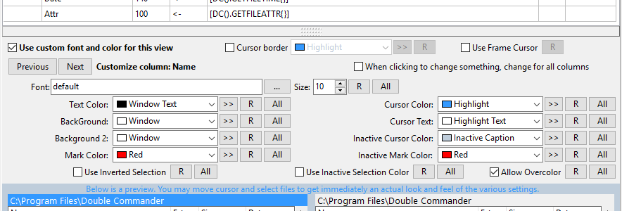
Hinweis: Cursorrand und Rahmenzeiger verwenden lassen sich nur für den gesamten Satz anwenden.
Vorherige, Nächste – wechselt die Spalten.
Spalte anpassen – zeigt den Namen der eigenen Spalte.
>> – Schaltfläche, um eine beliebige Farbe aus der Palette zu wählen.
R – stellt den Standardwert wieder her.
Alle – wendet die Änderung auf alle anderen Spalten an.
Plugins sind Erweiterungen, die den Funktionsumfang von Double Commander vergrößern.
Zuerst einige allgemeine Einstellungen.
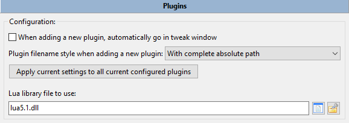
Beim Hinzufügen eines neuen Plugins automatisch das Anpassungsfenster öffnen – Siehe die Beschreibung der Schaltfläche Anpassen unten.
Stil des Plugin-Dateinamens beim Hinzufügen eines neuen Plugins – Hier können Sie wählen, wie der Pfad beim Hinzufügen von Plugins gesetzt wird:
Mit vollständigem absolutem Pfad.
Pfad relativ zu %COMMANDER_PATH%.
Relativ zum angegebenen Pfad.
Sie können die gewählte Art auch auf die bereits hinzugefügten Plugins anwenden.
Zu verwendende Lua-Bibliotheksdatei – der vollständige Name der Lua-Bibliothek oder nur der Dateiname, wenn die Datei im Programmverzeichnis oder in den Systemverzeichnissen für Bibliotheken liegt. Dieser Pfad kann relativ zur Programmdatei von Double Commander sein. (Lua-Skripte können zur Automatisierung und als Inhalts-Plugins verwendet werden, weitere Einzelheiten hier.)
Es gibt mehrere Arten von Plugins:
1. Packer-Plugins (WCX)
Packer-Plugins dienen dazu, bestimmte Dateitypen zu entpacken, meist Archivformate. Manche Plugins unterstützen außerdem das Erzeugen neuer Archive und das Ändern vorhandener Archive.
Es gibt Plugins, die es erlauben, eine Liste ausgewählter Dateien zu speichern oder Stapelverarbeitung zu verwenden: Verknüpfungen erzeugen, Dateien umwandeln, Kopieren unter bestimmten Bedingungen usw.
Die Reihenfolge ist wichtig: Beim Wählen eines passenden Plugins prüft Double Commander die Erweiterung von oben nach unten. Mit der Schaltfläche Nach Erweiterung/Nach Plugin wechseln Sie die Listenansicht und das Ziehen und Ablegen.
2. Inhalts-Plugins (WDX)
Inhalts-Plugins dienen dazu, Eigenschaften einer Datei oder Informationen über ihren Inhalt zu erhalten (zum Beispiel EXIF- oder ID3-Tags). Diese Daten können Sie in der Dateisuche oder im Mehrfach-Umbenennen, im Spaltensatz und in Kurzinfos verwenden.
Double Commander unterstützt außerdem Inhalts-Plugins, die in der Sprache Lua geschrieben sind (Skripte werden genauso hinzugefügt wie gewöhnliche Plugins). Beispiele finden Sie im Programmordner (plugins/wdx/scripts).
3. Dateisystem-Plugins (WFX)
Dateisystem-Plugins verwenden eigene Dateisysteme oder bieten Zugriff auf andere Dateisysteme und Geräte (lokal oder entfernt). Zum Beispiel FTP-Server, Netzwerkverzeichnisse, mobile Geräte. Es können auch Dateilisten, laufende Prozesse und Dienste oder die Windows-Registrierung sein.
4. Betrachter-Plugins (WLX)
Der eingebaute Dateibetrachter zeigt einfache Textdateien, einige Bildformate und die Ausgabe von Konsolenbefehlen; Plugins erweitern diese Liste: elektronische Dokumente und Datenbanken, Audio- und Videodateien, Schriftdateien, Inhalt von Archiven, ausführliche Informationen zu manchen Dateien, Quelltextdateien mit Syntaxhervorhebung.
Die Reihenfolge ist wichtig: Beim Wählen eines passenden Plugins prüft Double Commander von oben nach unten.
5. Such-Plugin (DSX)
Such-Plugins sind der eigene Plugintyp von Double Commander. Diese Plugins verwenden Konsolenprogramme, um Dateien zu finden (zum Beispiel Locate, Everything oder Recoll). Die Schnittstelle der DSX-Plugins erlaubt es, ihnen Werte der Suchparameter aus den Registerkarten „Standard“ und „Erweitert“ zu senden.
Schaltflächen:
Hinzufügen – öffnet den Dateiauswahldialog. Alternativ können Sie den internen Befehl cm_AddPlugin verwenden (Plugins können auch automatisch installiert werden).
Deaktivieren – erlaubt es, das gewählte Plugin vorübergehend zu deaktivieren.
Entfernen – entfernt das gewählte Plugin aus der Liste (aber nicht die Plugin-Datei!).
Anpassen – die Aktion hängt vom Plugintyp ab:
WCX: Plugin-Pfad ändern, Dateierweiterungen und unterstützte Funktionen festlegen;
WDX und WLX: Plugin-Pfad, Anzeigenamen oder Erkennungszeichenkette ändern;
WFX: Plugin-Pfad oder Anzeigenamen ändern.
Konfigurieren – öffnet das eigene Einstellungsfenster des Plugins (wenn das gewählte Plugin diese Funktion unterstützt).
Double Commander unterstützt die Verwendung eines Hauptpassworts, um Passwörter in WCX- und WFX-Plugins zu schützen (wenn der Plugin-Entwickler die Verwendung dieser Funktion vorgesehen hat). Das ist praktisch, weil Ihre Passwörter durch Verschlüsselung geschützt sind und Sie sich nur ein Passwort merken müssen. Passwörter werden zweimal verschlüsselt, zuerst mit Blowfish (448 Bit) und dann mit AES (256 Bit); die Funktion Argon2 wird verwendet, um aus dem Hauptpasswort einen Schlüssel abzuleiten.
Double Commander unterstützt zwei Versionen des Algorithmus Argon2 (Argon2d und Argon2id) und erlaubt es, drei Parameter anzugeben: Anzahl der Iterationen, benötigter Speicher, Grad der Parallelität. RFC 9106 empfiehlt Argon2id, wenn Sie den Unterschied zwischen den Versionen nicht kennen oder wenn Seitenkanal-Angriffe als echte Bedrohung gelten. Eine höhere Anzahl von Iterationen und/oder eine größere Speichermenge verlängert die Ausführungszeit der Funktion und erschwert das Knacken des Passworts; ein höherer Grad der Parallelität (aber ohne die Anzahl der logischen Kerne Ihres Prozessors zu überschreiten) erlaubt der Funktion, schneller zu arbeiten. Es wird außerdem empfohlen, die Parameter so zu wählen, dass die Funktion etwa 0,5–1 Sekunde braucht (mehr ist besser, aber bei zu großen Werten kann die Verwendung des Hauptpassworts unpraktisch werden).
Hinweis: Wenn Sie die portable Version von Double Commander auf einem USB-Stick auf mehreren Computern aktiv verwenden oder eine zentrale Installation der Anwendung mit Konfigurationsdateien nutzen, kann es praktisch sein, die Einstellungen für den Computer mit der geringsten Leistung zu wählen.
Hinweis: Derzeit unterstützt Double Commander das Ändern des Hauptpassworts nicht: Bei Bedarf müssen Sie die Verwendung des Hauptpassworts in den Plugin-Einstellungen abschalten, das Programm schließen, das Verzeichnis mit den Konfigurationsdateien öffnen, die Datei pwd.ini löschen, das Programm erneut starten und das Hauptpasswort in den Plugin-Einstellungen wieder einschalten. Um veraltete oder unnötige gespeicherte Passwörter zu löschen, müssen Sie das Programm schließen und die Datei pwd.ini von Hand bearbeiten.
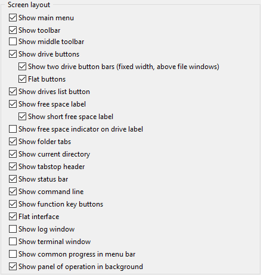
Hier können Sie das Layout des Hauptfensters ändern. Ich nehme an, alle verfügbaren Optionen sind auf dem Bildschirmfoto oben (Layout) erklärt. Das Bildschirmfoto unten zeigt, wie DC aussieht, wenn alle Layout-Optionen abgewählt sind.
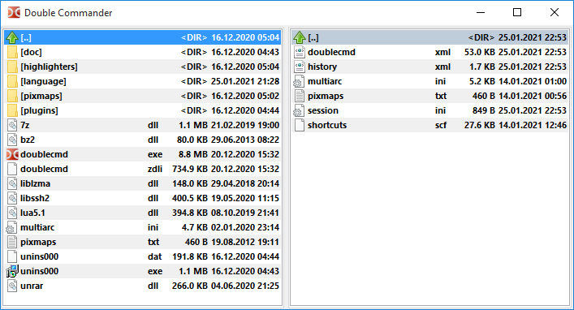
Es gibt außerdem mehrere Parameter, die sich nur von Hand in der Konfigurationsdatei doublecmd.xml ändern lassen.
Ab macOS 11 hat Double Commander standardmäßig eine Werkzeugleiste in der Fenstertitelleiste, zusätzlich zur Hauptwerkzeugleiste. Dieses Oberflächenelement können Sie von Hand abschalten: Double Commander schließen, in das Verzeichnis der Konfigurationsdateien gehen (Einzelheiten hier), die Datei doublecmd.cfg öffnen, den Parameter ModernUI suchen, seinen Wert von True auf False ändern und die Anwendung erneut starten.
2.10.1. Layout > Schaltfläche der Laufwerksliste
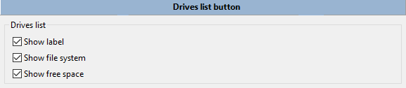
In diesem Abschnitt können Sie wählen, welche zusätzlichen Informationen Double Commander im Menü der Laufwerksliste anzeigt: Laufwerksbezeichnung, Dateisystem und freier Speicherplatz.
2.10.2. Layout > Baumansichtsmenü
In diesem Abschnitt können Sie das Baumansichtsmenü einschalten und wählen, wo es verwendet wird.
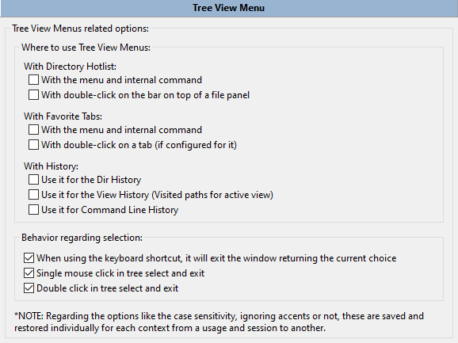
Das Baumansichtsmenü ist eine Art, einige Menüs von Double Commander als Baum in einem eigenen Fenster anzuzeigen: Verzeichnis-Favoriten, Favoriten-Registerkarten, Verzeichnis- und Befehlszeilenverlauf. Diese Darstellung und ein Filter helfen Ihnen, den gewünschten Menüeintrag schnell zu wählen.
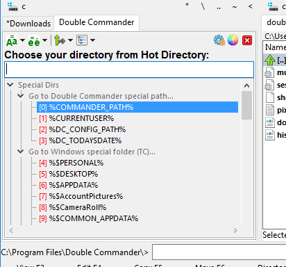
Über die Parameter der entsprechenden internen Befehle können Sie die Position des Baumansichtsmenüs festlegen:
das Menü wird von der linken oberen Ecke des aktiven Panels aus angezeigt;
das Menü wird an der aktuellen Position des Mauszeigers angezeigt.
Parameter können in den Einstellungen der Tastenkürzel angegeben oder als Schaltfläche auf der Werkzeugleiste hinzugefügt werden.
Double Commander kann außerdem das Hauptmenü und die Werkzeugleiste als Baum anzeigen (immer in der Mitte seines Fensters), siehe die Beschreibung der Befehle cm_ShowMainMenu und cm_ShowButtonMenu.
2.10.3. Layout > Farben des Baumansichtsmenüs
Hier können Sie das Aussehen des Menüs nach Ihren Wünschen anpassen, eine Vorschau zeigt alle Änderungen vor dem Speichern.
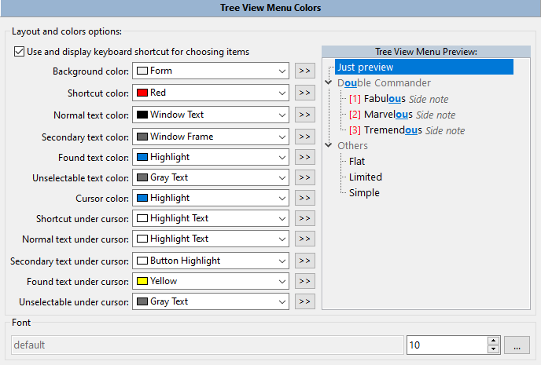
2.11. Werkzeugleiste und Werkzeugleiste > Mittlere Werkzeugleiste
Auf der eigenen Hilfeseite Werkzeugleiste steht, wie Sie sie verwenden und einrichten.
2.11.2. Werkzeugleiste > Werkzeugleiste extra
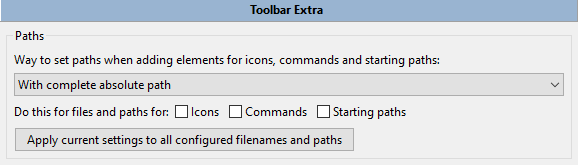
In diesem Abschnitt können Sie wählen, wie der Pfad beim Hinzufügen von Symbolen, Befehlen und Startpfaden gesetzt wird:
Mit vollständigem absolutem Pfad.
Pfad relativ zu %COMMANDER_PATH%.
Relativ zum angegebenen Pfad.
Sie können die gewählte Art auch auf die bereits hinzugefügten Pfade anwenden.
Dieser Abschnitt enthält Einstellungen zur Dateibearbeitung.
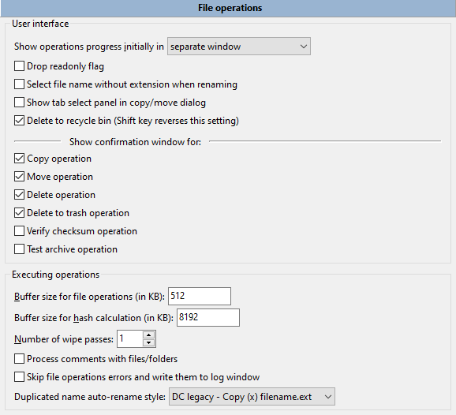
Fortschritt der Operationen anfangs anzeigen in – legt die anfängliche Anzeigeart und Position des Fortschritts der Dateioperationen fest:
eigenes Fenster;
minimiertes eigenes Fenster;
Operationspanel: das besondere Panel über der Leiste der Funktionstastenschaltflächen wird verwendet
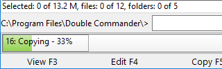
Schreibschutzkennung entfernen – Wenn aktiviert, entfernt Double Commander diese Kennung unter Windows und fügt unter Linux das Attribut „w“ hinzu. Das ist praktisch, wenn Dateien von CD/DVD-Medien kopiert werden, bei denen die Dateien standardmäßig das Attribut schreibgeschützt behalten würden.
Beim Umbenennen den Dateinamen ohne Erweiterung auswählen – Wenn aktiviert, wählt das Umbenennen mit der Taste F2 alle Zeichen im Dateinamen bis zum letzten Punkt aus, andernfalls wird der gesamte Dateiname ausgewählt.
Registerkarten-Auswahlpanel im Kopieren-/Verschieben-Dialog anzeigen – Hat das Zielpanel mehr als eine Registerkarte, können Sie beim Kopieren/Verschieben die Zielregisterkarte wählen:
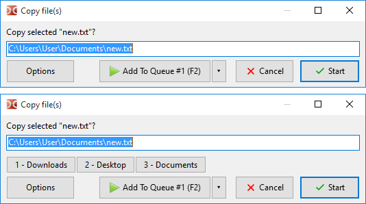
In den Papierkorb löschen (die Umschalttaste kehrt diese Einstellung um) – Wenn aktiviert, löscht Double Commander die ausgewählten Dateien oder die Datei unter dem Cursor in den Papierkorb, wenn Sie F8 oder Del drücken, und löscht dauerhaft, wenn Sie Shift+F8 oder Shift+Del verwenden. Ist das Kontrollkästchen nicht gesetzt, ist das Verhalten dieser Tasten umgekehrt.
Bestätigungsfenster anzeigen für – erlaubt es, die Dateioperationen zu wählen, für die Double Commander Bestätigungsdialoge anzeigt. Standardmäßig ist das sicherste Verhalten gewählt. Bedenken Sie, dass diese Parametergruppe nicht berücksichtigt wird, wenn Sie Ziehen und Ablegen verwenden: In diesem Fall verwendet Double Commander einen unabhängigen Parameter im Einstellungsabschnitt Maus > Ziehen und Ablegen.
Die folgenden Parameter beziehen sich unmittelbar auf die Ausführung von Operationen.
Die Parameter Puffergröße für Dateioperationen (in KB) und Puffergröße für die Hash-Berechnung (in KB) legen die Größe des zugewiesenen Speichers für Operationen wie Kopieren, Verschieben, Teilen oder Zusammenfügen von Dateien, Suchen von Dateien nach Inhalt und Berechnen von Prüfsummen fest. Es gibt keinen universellen Wert, aber Sie können versuchen, eine passendere Größe zu finden.
Hinweis: Der erste Parameter wird in der Kopierfunktion unter Windows nicht verwendet, weil zum Kopieren die Systemfunktion verwendet wird.
Anzahl der Durchgänge beim sicheren Löschen – Hier können Sie die Anzahl der Überschreibungen angeben, um Dateien sicher zu löschen.
Kommentare zusammen mit Dateien/Ordnern verarbeiten – Wenn aktiviert und eine Datei/ein Ordner einen Kommentar hat und Sie sie/ihn in einen anderen Ordner kopieren oder verschieben, wird der Kommentar zusammen mit der Datei/dem Ordner zum Ziel kopiert oder verschoben. Wenn Sie eine Datei löschen oder sicher löschen, wird auch ihr Kommentar gelöscht. Wenn Sie eine Datei umbenennen, wird ihr Name auch in der Datei descript.ion geändert.
Andernfalls wird die Datei descript.ion wie eine gewöhnliche Datei verarbeitet.
Fehler bei Dateioperationen überspringen und ins Protokollfenster schreiben – Tritt ein Fehler bei einer Dateioperation auf, erscheint die Fehlermeldung im Protokollfenster unter den Panels statt in einem Aufklappdialog. Das kann nützlich sein, weil das Fehlerfenster die Operation anhält. Im Einstellungsabschnitt Protokoll können Sie die Gesamtzahl der Meldungen begrenzen und nur Meldungen mit dem Status „Fehler“ zulassen.
Der Parameter wird bei den meisten Dateioperationen berücksichtigt: Kopieren, Verschieben, Löschen, sicheres Löschen, Zusammenfügen und Teilen von Dateien, Festlegen von Dateieigenschaften (Zeitstempel, Eigentümer, Attribute), Berechnen der Prüfsumme sowie Dateioperationen bei der Arbeit mit Archiven, WFX-Plugins und GVfs.
Stil der automatischen Umbenennung bei doppeltem Namen – legt die Vorlage für die automatische Umbenennung fest, wenn im Zielverzeichnis bereits eine Datei mit demselben Namen existiert (also wenn Sie im Kopieren-/Verschieben-Dialog Quelldateien automatisch umbenennen oder Zieldateien automatisch umbenennen wählen): „Kopie (x) dateiname.ext“, „dateiname (x).ext“ oder „dateiname(x).ext“, wobei „x“ ein Zähler ist (2, 3, 4 und so weiter).
Es gibt außerdem mehrere Parameter, die sich nur von Hand in der Konfigurationsdatei doublecmd.xml ändern lassen.
2.12.1. Dateioperationen > Dateisuche
Die Beschreibung steht auf der Hilfeseite Dateien suchen.
2.12.2. Dateioperationen > Mehrfach-Umbenennen
Die Beschreibung steht auf der Hilfeseite Mehrfach-Umbenennen.
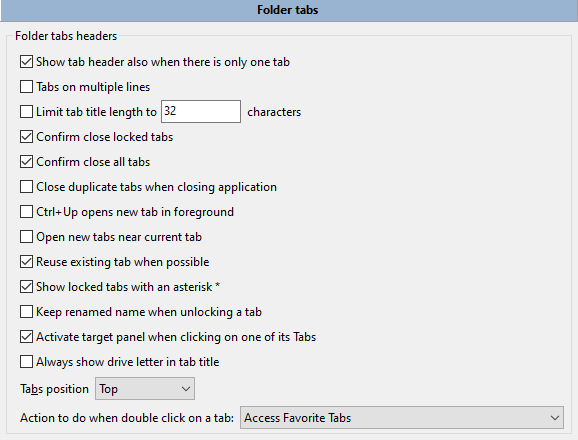
Registerkartenkopf auch anzeigen, wenn es nur eine Registerkarte gibt – Ist diese Option deaktiviert und gibt es nur eine Registerkarte im Panel, erscheint kein Registerkartenkopf (meist ist das optisch ansprechender).
Registerkarten in mehreren Zeilen (nur Windows) – Passen die Ordner-Registerkarten nicht in eine Zeile, werden sie in mehreren Zeilen angeordnet. Andernfalls werden rechts Schaltflächen zum Blättern angezeigt (GTK2: rechts und links).
Länge des Registerkartentitels begrenzen auf – Registerkarten mit langen Namen werden auf diese Länge begrenzt, und der angezeigte Name wird abgeschnitten, wenn er länger als dieser Wert ist.
Schließen gesperrter Registerkarten bestätigen – Wenn aktiviert, wird um Bestätigung gebeten, dass Sie die gesperrte Registerkarte schließen möchten. Andernfalls wird eine solche Registerkarte wie eine gewöhnliche Registerkarte geschlossen.
Schließen aller Registerkarten bestätigen – Ist dies gewählt und wird ein Befehl Alle Registerkarten schließen ausgeführt, bittet diese Option um Bestätigung, dass Sie alle inaktiven Registerkarten entfernen möchten.
Doppelte Registerkarten beim Schließen der Anwendung schließen – Wenn aktiviert, prüft Double Commander die Liste der geöffneten Registerkarten und schließt doppelte Registerkarten (getrennt für jedes Panel!), nur die erste von ihnen wird gespeichert (von links gezählt).
Ctrl+Nach-oben öffnet eine neue Registerkarte im Vordergrund – diese Option ändert das Verhalten des Befehls Ordner in neuer Registerkarte öffnen (cm_OpenDirInNewTab): Wenn aktiviert, öffnet Double Commander eine neue Registerkarte für das Verzeichnis unter dem Cursor und wechselt zu dieser Registerkarte.
Neue Registerkarten neben der aktuellen Registerkarte öffnen – Wenn aktiviert, wird die neue Registerkarte rechts neben der derzeit aktiven Registerkarte erzeugt. Andernfalls werden neue Registerkarten rechts nach der letzten Registerkarte hinzugefügt.
Vorhandene Registerkarte wiederverwenden, wenn möglich – Für eine gesperrte Registerkarte mit Verzeichniswechsel in einer neuen Registerkarte: Ist der gewählte Ordner bereits auf einer Registerkarte geöffnet, wird diese Registerkarte aktiviert, statt eine neue zu erzeugen.
Schließen-Schaltfläche der Registerkarte anzeigen (nur Unix-ähnliche Systeme) – Wenn gewählt, erscheint auf den Registerkarten eine kleine Schaltfläche „x“, mit der sie durch einen Klick geschlossen werden können.
Gesperrte Registerkarten mit einem Sternchen * anzeigen – um gesperrte und nicht gesperrte Registerkarten zu unterscheiden. Gesperrte Registerkarten werden mit „*“ gekennzeichnet. Die Registerkarte Downloads ist gesperrt:
Umbenannten Namen beim Entsperren einer Registerkarte behalten – Wenn Sie den Zustand einer Registerkarte von „gesperrte Registerkarte“ auf „normale Registerkarte“ ändern, stellt Double Commander den üblichen Registerkartennamen wieder her (Name des aktuellen Ordners): Diese Option erlaubt es, den geänderten Namen zu behalten.
Zielpanel aktivieren, wenn auf eine seiner Registerkarten geklickt wird – Wenn aktiviert, wird der Fokus automatisch auf das andere Panel übertragen (es wird das aktive Panel), wenn Sie mit der Maus auf eine Registerkarte des anderen Panels klicken. Außerdem bleibt die Cursorposition erhalten, wenn auf diese Weise zwischen den Panels gewechselt wird.
Laufwerksbuchstaben immer im Registerkartentitel anzeigen (nur Windows) – Laufwerksbuchstaben und einen Doppelpunkt vor dem Ordnernamen anzeigen, zum Beispiel „c:plugins“.
Position der Registerkarten – Ordner-Registerkarten oben oder unten an den Dateipanels platzieren.
Aktion bei Doppelklick auf eine Registerkarte: – Sie können eine der folgenden Aktionen wählen:
nichts tun;
diese Registerkarte schließen;
Favoriten-Registerkarten aufrufen (aktuelle Registerkarten speichern, gespeicherten Satz laden oder einrichten);
das Aufklappmenü der Registerkarten mit denselben Einträgen wie im Menü „Registerkarten“ anzeigen.
2.13.1. Ordner-Registerkarten > Favoriten-Registerkarten
Die Liste der gespeicherten Registerkartensätze ist im Menü „Favoriten“ und im Aufklappmenü verfügbar, das der Befehl cm_LoadFavoriteTabs aufruft.
In diesem Abschnitt können Sie sie verwalten: Reihenfolge und Namen ändern, Unnötiges löschen, sortieren oder in einem Untermenü gruppieren.
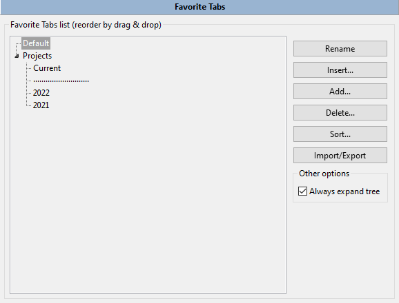
Sie können Einträge außerdem in das gewählte Verzeichnis exportieren und importieren. Jeder Eintrag wird in einer eigenen .tab-Datei gespeichert (bei Bedarf können Registerkarten aus einer solchen Datei mit dem Befehl cm_LoadTabs geladen werden).
Einige typische Aktionen sind im Kontextmenü der Einträge hinzugefügt.
2.13.2. Ordner-Registerkarten > Ordner-Registerkarten extra
Dieser Abschnitt enthält zusätzliche Einstellungen für Favoriten-Registerkarten.
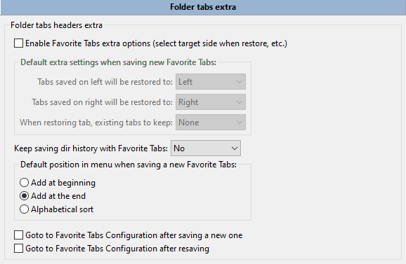
Zusätzliche Optionen der Favoriten-Registerkarten aktivieren (Zielseite beim Wiederherstellen wählen usw.) – Standardmäßig werden gespeicherte Registerkarten im selben Panel wiederhergestellt und ersetzen alle geöffneten Registerkarten. Sie können das ändern mit:
Links gespeicherte Registerkarten werden wiederhergestellt in:
Rechts gespeicherte Registerkarten werden wiederhergestellt in:
Beim Wiederherstellen der Registerkarte vorhandene Registerkarten behalten: – das heißt, die Favoriten-Registerkarten werden zu den bereits geöffneten Registerkarten hinzugefügt.
Für jeden Parameter sind folgende Werte verfügbar: Links, Rechts, Aktiv, Inaktiv, Beide oder Keine.
Verzeichnisverlauf zusammen mit Favoriten-Registerkarten weiter speichern – schaltet das Speichern des Verlaufs der besuchten Verzeichnisse für jede Registerkarte ein oder aus.
Sie können diese Parameter auch getrennt für jeden Registerkartensatz anwenden.
Standardposition im Menü beim Speichern neuer Favoriten-Registerkarten – bestimmt die Reihenfolge, in der ein neuer Satz hinzugefügt wird:
Am Anfang hinzufügen
Am Ende hinzufügen.
Alphabetische Reihenfolge.
Sie können außerdem wählen, den Einstellungsabschnitt Favoriten-Registerkarten nach dem Speichern eines neuen oder dem erneuten Speichern des aktuellen Satzes automatisch zu öffnen:
Nach dem Speichern eines neuen Satzes zur Konfiguration der Favoriten-Registerkarten gehen.
Nach dem erneuten Speichern zur Konfiguration der Favoriten-Registerkarten gehen.
Hier können Sie den Dateinamen wählen, in den die Operationen von Double Commander protokolliert werden (Kopieren oder Verschieben von Dateien, Erzeugen von Verzeichnissen, Starten externer Anwendungen und so weiter). Sie können außerdem wählen, welche Operationen protokolliert werden.
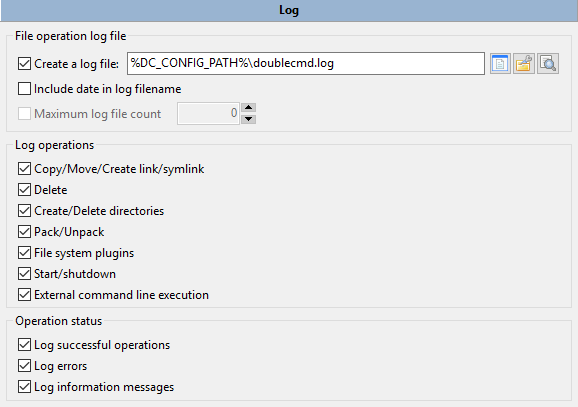
Ist Datum in den Protokolldateinamen aufnehmen aktiviert, erzeugt Double Commander für jeden Tag eine eigene Datei. In diesem Fall können Sie die Anzahl der Protokolldateien festlegen: Ältere Dateien werden automatisch gelöscht.
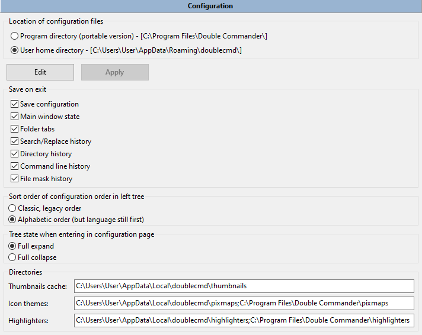
Speicherort der Konfigurationsdateien – Hier können Sie wählen, wo alle Konfigurationsdateien gespeichert werden (außerdem sehen Sie hier den vollständigen Pfad):
Der Ordner „settings“ im Programmverzeichnis (portable Version).
Benutzerverzeichnis.
Als Kennzeichen verwendet Double Commander eine leere Datei doublecmd.inf im Ordner „settings“ im Programmverzeichnis: Existiert die Datei, lädt Double Commander die Konfigurationsdateien aus dem Ordner „settings“ und speichert sie dort, andernfalls verwendet Double Commander den Ordner des aktuellen Benutzers. Sie können die Datei doublecmd.inf von Hand hinzufügen und eine portable Version erhalten oder sie löschen, indem Sie die Speichermethode auf den Benutzerordner umstellen.
Wenn Sie Double Commander mit dem Parameter --config-dir starten, schreibt DC nur Auf der Befehlszeile gesetzt und zeigt den vollständigen Pfad zu den Konfigurationsdateien.
Um schnell zum Verzeichnis mit den Konfigurationsdateien zu wechseln, können Sie das Untermenü Spezielle Verzeichnisse im Menü Verzeichnis-Favoriten verwenden oder die Variable %DC_CONFIG_PATH%.
Die Schaltflächen Bearbeiten und Übernehmen – erlauben es, die Konfigurationsdatei doublecmd.xml zu öffnen und die Einstellungen von Hand zu ändern. Bedenken Sie, dass manche Einstellungen einen Neustart von Double Commander brauchen, um zu wirken.
Hinweis (oder ein kleiner Trick): Auf diesem Weg lassen sich Einstellungen sofort anwenden, ohne DC neu zu starten (aber nicht alle!): Zum Beispiel können Sie die Größe der Symbole in den Dateipanels ändern und sofort übernehmen, die Programmsprache können Sie aber nicht ohne Neustart ändern.
Beim Beenden speichern – Hier können Sie wählen, was Double Commander beim Beenden speichert. Das Kontrollkästchen Konfiguration speichern schaltet das Speichern ein oder aus:
Zustand des Hauptfensters – Größe und Position des Anwendungsfensters.
Ordner-Registerkarten – Liste der Registerkarten, die im linken und rechten Panel geöffnet sind.
Verlauf Suchen/Ersetzen – Verlauf der Dateisuche (außer Dateinamensmasken, siehe unten), Verlauf der Masken im Mehrfach-Umbenennen und Verlauf des Suchens und Ersetzens von Text: Suche nach Dateiinhalt, Dateibetrachter, eingebauter Editor und eingebauter Vergleich, Suchen und Ersetzen in den Verzeichnis-Favoriten und in den Einstellungen der Werkzeugleiste. Der Zustand der Optionen der Textsuche (Groß-/Kleinschreibung beachten, Reguläre Ausdrücke und Hexadezimal) wird für jeden Eintrag ebenfalls gespeichert.
Verzeichnisverlauf – Liste aller besuchten Verzeichnisse (siehe Hinweis unten).
Befehlszeilenverlauf – Befehle, die in der Befehlszeile verwendet wurden.
Verlauf der Dateimasken – Double Commander speichert einen gemeinsamen Verlauf verwendeter Dateimasken für mehrere Werkzeuge: Dateien suchen, Filter bei der Verzeichnissynchronisierung und beim Entpacken von Archiven, Befehle zum Auswählen und Abwählen einer Dateigruppe.
Die maximale Anzahl der Einträge im Verlauf ist standardmäßig auf 50 begrenzt (siehe das Attribut MaxStringItems im Tag <History>).
Hinweis zum Verlauf der besuchten Verzeichnisse: Während der Sitzung speichert Double Commander bis zu 255 besuchte Verzeichnisse im Speicher, beim Schließen des Programms wird die Anzahl der gespeicherten Einträge jedoch auf den Wert MaxStringItems begrenzt. Sie können die Anzahl der Verlaufeinträge im Aufklappmenü ändern, wenn der Befehl cm_DirHistory aufgerufen wird (Standardwert ist 30, siehe das Attribut Count im Tag <DirHistory>), bei Verwendung des Baumansichtsmenüs wird jedoch der gesamte verfügbare Verlauf angezeigt.
Hinweis: Suchvorlagen gehören nicht zum Verlauf und werden getrennt gespeichert (in der Konfigurationsdatei doublecmd.xml). Um die Liste der Vorlagen zu verwalten, können Sie das Werkzeug Dateisuche verwenden.
Sie können wählen, wie die Liste der Einstellungsabschnitte aussieht:
Sortierreihenfolge der Konfiguration im linken Baum – Sie können klassisch (wie im Quelltext von Double Commander und in der Hilfe) oder alphabetisch wählen. In beiden Fällen ist der Abschnitt Sprache der erste.
Zustand des Baums beim Öffnen der Konfigurationsseite – den gesamten Baum aufklappen oder einklappen.
Verzeichnisse – Hier sehen Sie eine Liste von Verzeichnissen, die Double Commander zum Speichern des Miniatur-Zwischenspeichers, der Symbolthemen und der Syntaxhervorhebungsdateien für den internen Editor verwenden kann. Sie können sie nicht ändern, es ist nur eine Information.
Wird der portable Modus verwendet, verwendet Double Commander nur die entsprechenden Ordner („cache“, „pixmaps“ und „highlighters“) im Programmverzeichnis. In diesem Modus wird außerdem der Ordner „plugins“ im Programmverzeichnis für die automatische Installation von Plugins verwendet (Einzelheiten hier).
Dieser Abschnitt enthält die Einstellungen des Werkzeugs Schnellsuche/Filter. Die Schnellsuche dient dazu, Dateinamen im Panel zu suchen, der Schnellfilter blendet alle Dateinamen aus, die den Bedingungen nicht entsprechen.
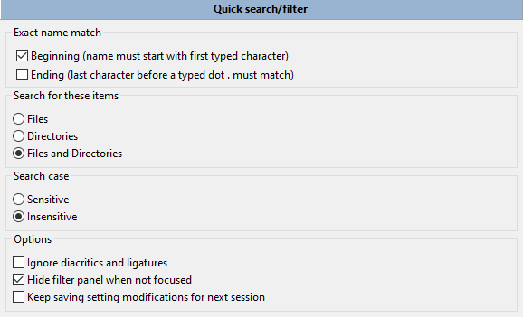
Genaue Namensübereinstimmung:
Anfang (der Name muss mit dem ersten eingegebenen Zeichen beginnen) – bedeutet, dass der eingegebene Text zur Maske „text*“ passt, wobei „*“ eine beliebige Anzahl beliebiger Zeichen ist.
Ende (das letzte Zeichen vor einem eingegebenen Punkt . muss passen) – Steht unter den eingegebenen Zeichen ein Punkt, muss der Name mit diesen Zeichen enden. Wenn Sie zum Beispiel „dx.l“ eingegeben haben, lautet die Dateimaske „*dx.l*“.
Ist nichts angekreuzt, können die eingegebenen Zeichen an einer beliebigen Stelle des Dateinamens stehen.
Ich habe gern Anfang (der Name muss mit dem ersten eingegebenen Zeichen beginnen) gewählt und kann dann einfach das erste Zeichen des gesuchten Dateinamens eingeben und danach das zweite Zeichen usw. So wird die Datei schnell gefunden.
Darunter können Sie die Berücksichtigung der Groß-/Kleinschreibung festlegen und wählen, wonach Sie suchen möchten: nur Dateien oder Verzeichnisse oder beides.
Diese Optionen lassen sich direkt in der Leiste der Schnellsuche/des Filters im laufenden Betrieb ändern. Sie können außerdem zwischen Suche und Filter umschalten.
Optionen:
Diakritika und Ligaturen ignorieren – vereinfacht die Verwendung der Schnellsuche/des Filters: Bei der Suche ersetzt Double Commander Buchstaben mit Diakritika und Ligaturen durch Buchstaben des lateinischen Alphabets (die Tabelle der üblichen Zeichen steht im Quelltext des Programms).
Filterpanel ausblenden, wenn es nicht den Fokus hat – Das Panel der Schnellsuche/des Filters blendet sich automatisch aus, sobald Sie den Fokus auf das Dateipanel setzen. In der Kurzansicht funktioniert das Ausblenden des Panels nicht richtig, deshalb wird die Option ignoriert, bis eine geeignete Lösung gefunden ist.
Änderungen der Einstellungen für die nächste Sitzung weiter speichern – Standardmäßig bleiben alle Parameter, die im Schnellsuchpanel geändert wurden, nur bis zum Schließen des Programms im Speicher; die Option erlaubt es, dieses Verhalten zu ändern.
Dieser Abschnitt enthält Parameter, für die in anderen Abschnitten der Einstellungen kein passender Platz war:
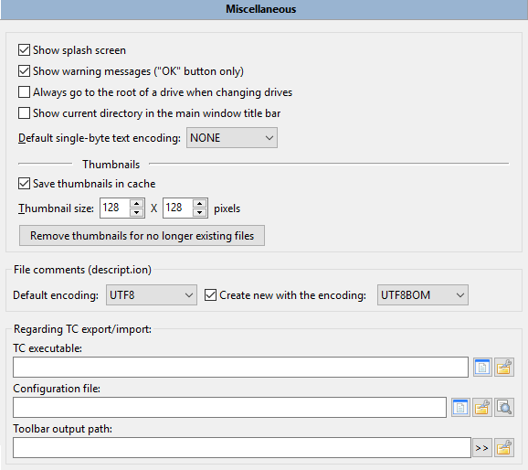
Startbildschirm anzeigen – Wenn aktiviert, zeigt Double Commander vor dem Hauptfenster einen Startbildschirm mit Programmsymbol und Version, Kompilierungsdatum sowie der Version von Lazarus, FPC und Betriebssystem.
Warnmeldungen anzeigen (nur Schaltfläche „OK“) – zeigt Warnmeldungen, wenn aktiviert. (Zum Beispiel, wenn Double Commander wegen Einschränkungen des Dateisystems im Zielverzeichnis eine Eigenschaft oder ein Attribut einer Datei nicht setzen kann.)
Beim Laufwerkswechsel immer ins Stammverzeichnis eines Laufwerks wechseln – Ist das Kontrollkästchen nicht gesetzt, wechselt Double Commander in das zuletzt geöffnete Verzeichnis auf diesem Laufwerk (in diesem Fall können Sie durch zweimaliges Drücken seiner Schaltfläche ins Stammverzeichnis des Laufwerks wechseln).
Aktuelles Verzeichnis in der Titelleiste des Hauptfensters anzeigen – Wenn aktiviert, zeigt Double Commander den Namen des aktuellen Ordners und den Pfad des aktiven Panels in der Titelleiste des Hauptfensters.
Standardkodierung für Ein-Byte-Text: – Standardmäßig (NONE) verwenden der eingebaute Dateibetrachter und der eingebaute Editor die automatische Erkennung der Kodierung, aber Sie können eine der unterstützten Ein-Byte-Kodierungen als Standardwert angeben. Dieser Parameter beeinflusst die automatische Erkennung von Mehr-Byte-Kodierungen (UTF-8, UTF-16 und andere) nicht. Es gibt außerdem besondere Werte:
ANSI – Standard-ANSI-Kodierung des Systems (hängt von der Systemlocale ab).
OEM – Standard-OEM-Kodierung (DOS) des Systems (hängt von der Systemlocale ab).
Miniaturansichten – Hier können Sie die Miniaturgröße der Bilder festlegen und das Speichern des Miniatur-Zwischenspeichers einschalten (andernfalls bleibt der Miniatur-Zwischenspeicher nur bis zum Schließen des Programms im Speicher). Die Parameterwerte werden im entsprechenden Ansichtsmodus der Dateiliste und im eingebauten Dateibetrachter verwendet. Das Verzeichnis des Miniatur-Zwischenspeichers finden Sie im Abschnitt Konfiguration. Double Commander verwendet die Formate PNG oder JPEG (nur für .bmp, .jpg und .jpeg). Der Miniaturname ist die MD5-Summe des vollständigen Namens der Quelldatei. Der vollständige Name der Quelldatei, ihre Größe und ihr Änderungsdatum werden der Datei hinzugefügt.
Die Schaltfläche Miniaturansichten für nicht mehr vorhandene Dateien entfernen hilft, veraltete Miniaturansichten zu entfernen.
Dateikommentare (descript.ion) – Hier können Sie die Standardkodierung für vorhandene Dateikommentare (OEM, ANSI oder UTF-8) und die Kodierung für neue Dateien (UTF-8 BOM, UTF-16 LE oder UTF-16 BE) festlegen.
Die nächste Parametergruppe dient dem Import aus Total Commander und dem Export der Verzeichnis-Favoriten und der Werkzeugleiste: Pfad und Name der Programmdatei von Total Commander und der Hauptkonfigurationsdatei sowie das Verzeichnis, in dem die Dateien der Werkzeugleiste liegen.
2.18. Automatische Aktualisierung
Erlaubt Double Commander, die Panels automatisch zu aktualisieren, so wie es der manuelle Aktualisierungsbefehl Ctrl+R tut.
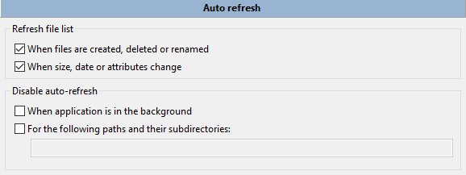
Dateiliste aktualisieren – legt fest, auf welche Ereignisse Double Commander reagieren und die Dateiliste sowie die Statusleiste aktualisieren soll:
Wenn Dateien erzeugt, gelöscht oder umbenannt werden.
Wenn sich Größe, Datum oder Attribute ändern.
Wenn es möglich ist, nimmt Double Commander die passende Änderung an der Dateiliste vor, andernfalls liest es die Dateiliste vollständig neu ein. Bei einer großen Zahl von Änderungen (wenn mehr als ein Viertel der Dateien betroffen ist oder die Gesamtzahl der Änderungen 100 übersteigt) wird die Dateiliste vollständig neu eingelesen.
Hinweis: Diese Funktion funktioniert möglicherweise nicht innerhalb eingehängter Netzwerkverzeichnisse.
Sind beide Optionen deaktiviert, beobachtet Double Commander keine Änderungen durch fremde Anwendungen, und nach Änderungen, die das Programm im Dateisystem vorgenommen hat, liest es die gesamte Dateiliste neu ein.
In virtuellen Dateisystemen (WFX-Plugins, GVfs) liest Double Commander die gesamte Dateiliste neu ein, wenn Sie eine Datei erzeugen, löschen oder umbenennen.
Hinweis: Das Endergebnis kann vom Wert der Parameter Neue Dateien einfügen und Aktualisierte Dateien verschieben im Einstellungsabschnitt Dateiansichten abhängen.
Sie können die automatische Aktualisierung außerdem abschalten:
Wenn das Fenster von Double Commander im Hintergrund liegt oder minimiert ist.
Für die angegebenen Pfade und ihre Unterverzeichnisse, einfach durch Semikolons „;“ ohne Leerzeichen getrennt auflisten (zum Beispiel /home;/media/cdrom).
Nur macOS. Dieser Abschnitt der Einstellungen listet installierte Anwendungen auf, die automatisch Ordner in iCloud Drive erzeugen: Sie können die Anwendungsordner wählen, die im virtuellen iCloud-Ordner verfügbar sein sollen.
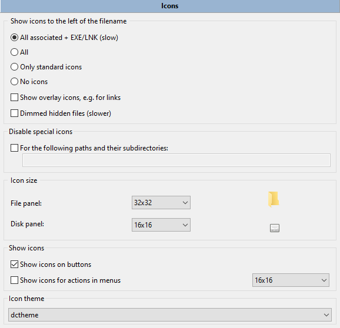
Die erste Option schaltet die Anzeige der Dateitypsymbole links neben dem Namen ein:
Alle zugeordneten + EXE/LNK (langsam) – Wie Alle, aber zusätzlich: Symbole aus .exe, .ico, .cur, .ani und Verknüpfungen (Windows), Anwendungssymbole aus Anwendungskatalogen (also .app, macOS), .desktop und .directory (Linux und andere Unix-ähnliche Systeme). Außerdem zeigt DC das Ordnersymbol, das in den Dateien desktop.ini (Windows) und .directory (Linux) angegeben ist.
Alle – Symbole für alle Dateitypen, die einem Programm zugeordnet sind, werden angezeigt (aus den Systemeinstellungen und den Dateizuordnungen von Double Commander).
Nur Standardsymbole – Es werden nur die in der Datei pixmaps.txt aufgeführten Symbole und die Symbole aus den Einstellungen der Dateizuordnung angezeigt. In diesem Fall können Sie Symbole nur aus dem Symbolthema von Double Commander verwenden (siehe die Verzeichnisse pixmaps/dctheme/XxX/mimetypes im Programmordner) oder den vollständigen Dateinamen (mit Pfad) angeben. Das Erzeugen eines Symbolthemas ist in den häufig gestellten Fragen beschrieben.
Keine Symbole.
Überlagerungssymbole anzeigen, zum Beispiel für Verknüpfungen – Wenn aktiviert, zeigt Double Commander Überlagerungssymbole wie Pfeile für .lnk-Dateien und andere Überlagerungsembleme und Kennzeichen:
Windows: Embleme aus den Einstellungen des Betriebssystems und von Drittanwendungen (zum Beispiel Versionsverwaltungssysteme oder Verzeichnisse lokaler Cloud-Speicher).
Linux und andere Unix-ähnliche Systeme (außer macOS und Haiku): Embleme von RabbitVCS (falls verfügbar) und Embleme aus dem Metadaten-Teilsystem GIO/GVfs (wie in Nautilus, Caja, Thunar, PCManFM und anderen, die es unterstützen).
Das Emblem der symbolischen Verknüpfung und das zusätzliche Emblem einer defekten/hängenden Verknüpfung werden in jedem Fall angezeigt.
Versteckte Dateien abgedunkelt (langsamer) – Wenn aktiviert, zeigt Double Commander Symbole versteckter Dateien mit 50 % Transparenz.
Besondere Symbole deaktivieren – Sie können das Laden besonderer Symbole (Überlagerungssymbole, Symbole aus .exe/.lnk-Dateien) für die angegebenen Verzeichnisse und ihre Unterverzeichnisse deaktivieren, einfach durch Semikolons „;“ ohne Leerzeichen getrennt auflisten.
Symbolgröße – Sie können aus folgenden Größen wählen:
Dateipanel – 16x16, 24x24, 32x32 oder 48x48.
Laufwerkspanel – 16x16, 24x24 oder 32x32.
Hauptmenü – 16x16, 24x24 oder 32x32.
Symbole auf Schaltflächen anzeigen – Wenn aktiviert, zeigt Double Commander Symbole auf den Schaltflächen der Dialogfenster (OK, Abbrechen, Start, Zur Warteschlange hinzufügen und so weiter).
Symbole für Aktionen in Menüs anzeigen – Wenn aktiviert, zeigt Double Commander Symbole im Hauptmenü des Anwendungsfensters und im Mehrfach-Umbenennen. Diese Option schaltet außerdem die Anzeige eines Untermenüsymbols in den Menüs der Verzeichnis-Favoriten und der Favoriten-Registerkarten ein.
Im letzten Parameter, Symbolthema, können Sie einen Symbolsatz aus dem Aufklappmenü wählen. Double Commander wird mit einem Symbolthema DCTheme ausgeliefert, aber Sie können ein eigenes erzeugen und hinzufügen, Einzelheiten stehen in den häufig gestellten Fragen.
Hinweis: Unter Unix-ähnlichen Systemen verwendet Double Commander vorrangig das System-Symbolthema; fehlen manche Symbole, verwendet es seine eigenen.
Bestimmte Dateien und Ordner ignorieren (eine pro Zeile): Sie werden in den Panels nicht angezeigt.
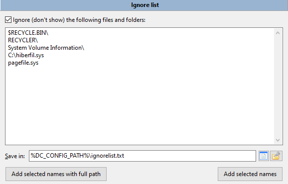
Sie können den vollständigen Pfad zur Datei oder den Dateinamen verwenden.
Unterstützt die Platzhalter „*“ und „?“ (das Zeichen „*“ steht für eine beliebige Anzahl von Zeichen, das Zeichen „?“ für genau ein Zeichen).
Endet eine Maske mit einem Verzeichnistrennzeichen, passt sie nur auf Verzeichnisse.
Speichern in: – der Speicherort der Ignorierliste (standardmäßig ist es ignorelist.txt neben doublecmd.xml).
Ausgewählte Namen mit vollständigem Pfad hinzufügen – fügt alle Dateien/Ordner hinzu, die im aktiven Panel ausgewählt sind (falls vorhanden), oder die Datei unter dem Cursor, mit vollständigem Pfad.
Ausgewählte Namen hinzufügen – fügt die Namen aller Dateien/Ordner hinzu, die im aktiven Panel ausgewählt sind (falls vorhanden), oder der Datei unter dem Cursor. Das bedeutet, dass sie überall ausgeblendet werden.
Hinweis: Diese beiden Schaltflächen fügen am Ende der Ordnernamen kein Verzeichnistrennzeichen hinzu.
Sie können den internen Befehl cm_SwitchIgnoreList verwenden, um diese Option ein- und auszuschalten, eine Schaltfläche auf der Werkzeugleiste oder ein Tastenkürzel hinzuzufügen.
Auf der eigenen Hilfeseite Umgang mit Archiven steht, wie Sie sie verwenden und einrichten.
Dieser Abschnitt enthält die Einstellungen für Kurzinfos, wenn der Mauszeiger über einer Datei steht.
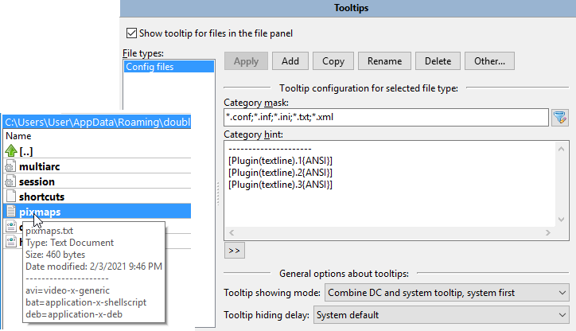
Kurzinfo für Dateien im Dateipanel anzeigen – schaltet die Möglichkeit ein, Kurzinfos zu verwenden.
Dateitypen – enthält eine Liste von Dateigruppen. Double Commander prüft die Liste von oben nach unten bis zur ersten Übereinstimmung: Eine weiter oben stehende Dateigruppe überdeckt jede Dateigruppe darunter.
Schaltflächen:
Übernehmen – speichert die Einstellungen für den gewählten Dateityp.
Hinzufügen – fügt einen neuen Dateityp hinzu und fragt nach einem Namen; Sie können eine Beschreibung der Datei eintragen, was sie tut oder welches Programm sie öffnet.
Kopieren – kopiert den gewählten Dateityp unter einem neuen Namen.
Umbenennen – fordert zur Eingabe eines neuen Namens für den gewählten Dateityp auf.
Löschen – löscht den gewählten Dateityp.
Die Schaltfläche Andere... ist ein Menü:
Änderungen verwerfen – setzt alle ungespeicherten Änderungen im gewählten Dateityp zurück.
Kurzinfo-Dateitypen sortieren – sortiert die Dateitypen alphabetisch (zuerst Groß-, dann Kleinbuchstaben).
Exportieren... und Importieren... – erlauben es, Kurzinfos in eine DC-Kurzinfo-Datei zu exportieren und aus solchen Dateien zu importieren (vollständig oder in Teilen).
Darunter können Sie den Inhalt der Kurzinfo für den gewählten Dateityp einrichten.
In der Zeile Kategoriemaske tragen Sie eine Platzhaltermaske ein, die zu den Dateitypen passt (das Zeichen „*“ steht für eine beliebige Anzahl von Zeichen, das Zeichen „?“ für genau ein Zeichen). Sie können hier mehrere Dateitypen mit einem Semikolon „;“ ohne Leerzeichen eintragen. Außerdem können Sie Suchvorlagen verwenden ( ), einschließlich der Suche mit Inhalts-Plugins.
), einschließlich der Suche mit Inhalts-Plugins.
Im Feld Kategoriehinweis können Sie beliebigen Text eingeben und die Felder der WDX-Plugins verwenden, um Informationen zu erhalten (die Schaltfläche „>>“).
Die übrigen Parameter sind allgemeine Parameter der Kurzinfo.
Anzeigemodus der Kurzinfo – bestimmt, welche Art von Kurzinfos Double Commander anzeigt und wie sie kombiniert werden, wenn beide Arten:
DC- und System-Kurzinfo kombinieren, DC zuerst (bisheriges Verhalten).
DC- und System-Kurzinfo kombinieren, System zuerst.
DC-Kurzinfo anzeigen, wenn möglich, und sonst die System-Kurzinfo.
Nur die DC-Kurzinfo anzeigen.
Nur die System-Kurzinfo anzeigen.
Der Inhalt der System-Kurzinfo hängt vom Betriebssystem ab:
Windows: Dateiname und dasselbe wie im Windows-Explorer. Konnten keine Informationen ermittelt werden, zeigt Double Commander dasselbe wie unter Linux und anderen Unix-ähnlichen Systemen.
Linux und andere Unix-ähnliche Systeme: Dateiname, Änderungsdatum und Größe.
Die erste Zeile der Kurzinfo enthält immer den Dateinamen, und wenn Sie im Feld Kategoriehinweis nichts angegeben haben, enthält die DC-Kurzinfo nur den Dateinamen.
Verzögerung beim Ausblenden der Kurzinfo – legt die Anzeigedauer der Kurzinfo fest: Systemstandard, 1 Sek., 2 Sek., 3 Sek., 5 Sek., 10 Sek., 30 Sek., 1 Min. und nie ausblenden (die Kurzinfo wird ausgeblendet, wenn Sie den Mauszeiger auf eine andere Datei oder außerhalb des Dateipanels bewegen).
Auf dem Bildschirmfoto am Anfang der Abschnittsbeschreibung sehen Sie ein Beispiel einer Kurzinfo mit dem Plugin textline.wdx, das den Inhalt der gewählten Zeilen einer Textdatei zeigt (in diesem Fall die erste, zweite und dritte Zeile); der Modus DC- und System-Kurzinfo kombinieren, System zuerst ist gewählt.
Dieser Eintrag öffnet die Konfiguration der Dateizuordnungen. Alle Zuordnungssätze sind in der Datei extassoc.xml enthalten.
Hier können Sie Dateizuordnungen anpassen und Befehle oder Skripte für gewählte Dateitypen festlegen. Befehle werden dem Kontextmenü der Dateien hinzugefügt. Double Commander erlaubt es außerdem, einfach Symbole für Dateitypen zu setzen (oder zu ersetzen), ohne Aktionen hinzuzufügen.
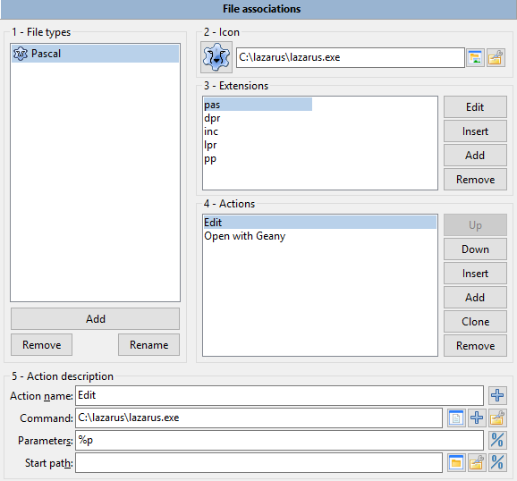
Dateitypen – enthält eine Liste von Erweiterungen. Jede Gruppe kann viele Dateierweiterungen enthalten, und eine solche Gruppe kann verschiedenen Programmen zugeordnet werden.
Hinzufügen – fügt eine neue Gruppe hinzu. Sie sollten einen Gruppennamen eingeben.
Entfernen – löscht eine Gruppe.
Umbenennen – erlaubt es, einen neuen Namen für die Gruppe festzulegen.
Symbol – Sie können den Pfad zu einem Symbol für diese Gruppe festlegen. Double Commander unterstützt häufig verwendete Bildformate, zusätzlich können Sie unter Windows Symbole aus binären Programmdateien verwenden (.exe oder .dll; in diesem Fall wählt DC automatisch die passende Symbolgröße aus den verfügbaren). Sie können auch nur den Namen des Symbols ohne Erweiterung angeben (meist werden MIME-Typ-Symbole verwendet), in diesem Fall:
Windows: Double Commander verwendet das Symbol aus seinem eigenen aktuellen Symbolthema.
Linux und andere Unix-ähnliche Systeme: Double Commander verwendet das Symbol aus dem System-Symbolthema, weil das Vorrang hat. Gibt es keine Symboldatei, verwendet das Programm das Symbol aus seinem eigenen aktuellen Symbolthema.
Das ist ein bequemer Weg, weil Double Commander automatisch die passende Symbolgröße aus den verfügbaren wählt und den Wechsel des Symbolthemas berücksichtigt.
Erweiterungen – hier können Sie die Erweiterungen (ohne Punkt) für die gewählte Gruppe festlegen. Sie können mehrere Erweiterungen mit einem senkrechten Strich „|“ hinzufügen (ohne Leerzeichen dazwischen). Besondere Werte:
file – jede Datei;
folder – jedes Verzeichnis;
default – wird verwendet, wenn keine erweiterungsspezifische interne Zuordnung existiert (nur für die Aktionen „Öffnen“, „Betrachten“ und „Bearbeiten“, siehe unten).
Einfügen – fügt eine neue Erweiterung an der aktuellen Position in der Liste hinzu.
Hinzufügen – fügt eine neue Erweiterung am Ende der Liste hinzu.
Entfernen – löscht eine Erweiterung aus der Gruppe.
Aktionen – hier können Sie Befehle für die Gruppe festlegen.
Einfügen – fügt eine neue Aktion an der aktuellen Position in der Liste hinzu.
Hinzufügen – fügt eine neue Aktion am Ende der Liste hinzu.
Entfernen – löscht eine Aktion aus der Liste.
Nach oben, Nach unten – verschiebt die Aktion. Die Aktionen (wenn es mehr als eine gibt) können umgeordnet werden.
Aktionsname: – legt die Art der Aktion fest. Varianten:
Aus dem Aufklappmenü
Öffnen – die Aktion wird nach dem Drücken von Enter oder einem Doppelklick ausgeführt.
Betrachten – die Aktion wird nach dem Drücken von F3 ausgeführt.
Bearbeiten – die Aktion wird nach dem Drücken von F4 ausgeführt.
Andere Aktionen, die im Dateikontextmenü angezeigt werden (Untermenü „Aktionen“).
Befehl – ein beliebiger Befehl der Arbeitsumgebung. Außerdem sind mehrere Makros verfügbar (die Namen unterscheiden Groß- und Kleinschreibung!):
{!DC-EDITOR} – internen Editor aufrufen;
{!DC-VIEWER} – internen Dateibetrachter aufrufen;
{!EDITOR} – Editor aufrufen (intern oder extern, abhängig von der Konfiguration);
{!VIEWER} – Dateibetrachter aufrufen (intern oder extern, abhängig von der Konfiguration);
{!SHELL} – im Terminal ausführen und am Ende offen lassen.
{!TERMSTAYOPEN} – im Terminal ausführen und am Ende offen lassen;
{!TERMANDCLOSE} – im Terminal ausführen und am Ende das Schließen anfordern.
Aktionen „Betrachten“ mit dem Makro {!DC-VIEWER} werden für die Schnellansicht berücksichtigt, andere Makros und Befehle werden ignoriert.
{!TERMSTAYOPEN} und {!TERMANDCLOSE} wurden zur Vereinheitlichung und für die Möglichkeit hinzugefügt, die Variablen %t0 und %t1 zu verwenden; {!SHELL} wurde aus Gründen der Abwärtskompatibilität beibehalten.
Als Befehl können Sie die internen Befehle von Double Commander verwenden. Die Parameter der internen Befehle werden einer pro Zeile angegeben, deshalb können Sie hier nur einen angeben. Mit dem internen Befehl cm_ExecuteScript können Sie außerdem Lua-Skripte ausführen; in diesem Fall können Sie die Namen der ausgewählten Dateien über interne Befehle (cm_CopyFullNamesToClip oder cm_SaveSelectionToFile) oder die Funktion DC.ExpandVar erhalten.
Parameter – Befehlsparameter einschließlich Variablen:
jede Variable aus den „Prozent“-Variablen.
<?command?> – führt „command“ in der System-Shell aus und übergibt die Ausgabe an den Befehl darüber.
Mindestens müssen Sie einen Dateinamen angeben, meist %p oder %p0 für die Datei unter dem Cursor.
Startpfad – Startverzeichnis des Befehls. Dieses Verzeichnis wird das Arbeitsverzeichnis des gestarteten Programms, und wenn Sie es nicht ausdrücklich angeben müssen, lassen Sie dieses Feld einfach leer: In diesem Fall ist das Arbeitsverzeichnis das aktuelle Verzeichnis des aktiven Dateipanels (gewöhnliche Dateien) oder das Systemverzeichnis für temporäre Dateien (Dateien aus Archiven und WFX-Plugins). Hier können Sie die Variable %D, %d oder Umgebungsvariablen verwenden.
Alle verfügbaren Aktionen werden im Untermenü „Aktionen“ im Kontextmenü angezeigt:
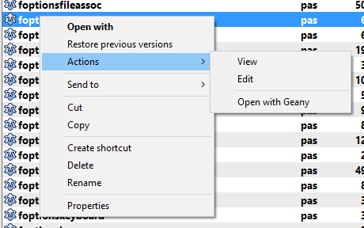
2.24.1. Dateizuordnungen > Dateizuordnungen extra
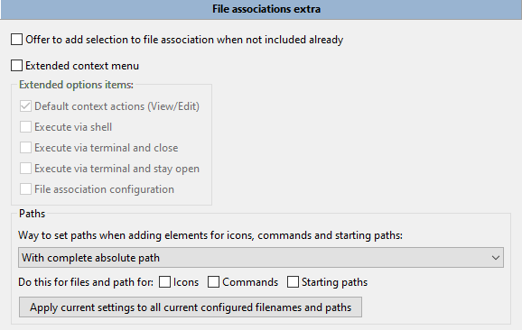
Anbieten, die Auswahl zur Dateizuordnung hinzuzufügen, wenn sie noch nicht enthalten ist – Beim Zugriff auf die Dateizuordnung anbieten, die aktuell ausgewählte Datei hinzuzufügen, wenn sie noch nicht in einem eingerichteten Dateityp enthalten ist. Das ist ein schneller Weg, eine Aktion „Öffnen mit“ hinzuzufügen: Double Commander fordert Sie auf, einen Typnamen und eine Programmdatei anzugeben, alles andere geschieht automatisch.
Erweitertes Kontextmenü – erlaubt es, einige Einträge zum Untermenü „Aktionen“ hinzuzufügen:
Standard-Kontextaktionen (Betrachten/Bearbeiten) – Befehle zum Öffnen einer Datei im Dateibetrachter und im Editor. Es werden eingebaute Werkzeuge oder externe Anwendungen verwendet (abhängig von den Einstellungen), interne Dateizuordnungen werden ignoriert.
Ausführen mit den Makros {!SHELL}, {!TERMANDCLOSE} und {!TERMSTAYOPEN} (Einzelheiten hier):
Über die Shell ausführen
Über das Terminal ausführen und schließen
Über das Terminal ausführen und offen lassen
Konfiguration der Dateizuordnung – öffnet den Einstellungsabschnitt Dateizuordnungen.
Darunter können Sie wählen, wie der Pfad beim Hinzufügen von Symbolen, Befehlen und Startpfaden gesetzt wird:
Mit vollständigem absolutem Pfad.
Pfad relativ zu %COMMANDER_PATH%.
Relativ zum angegebenen Pfad.
Sie können die gewählte Art auch auf die bereits hinzugefügten Pfade anwenden.
Auf der eigenen Hilfeseite Verzeichnis-Favoriten steht, wie Sie sie verwenden und einrichten.
2.25.1. Verzeichnis-Favoriten > Verzeichnis-Favoriten extra
In diesem Abschnitt können Sie wählen, wie der Pfad und der Zielpfad gesetzt werden:
Mit vollständigem absolutem Pfad.
Pfad relativ zu %COMMANDER_PATH%.
Relativ zum angegebenen Pfad.
Sie können die gewählte Art auch auf die bereits hinzugefügten Pfade anwenden.
Erstellt von Rustem (dok_rust@bk.ru)
Englische Fassung von Rod J (rodmac_shiels@hotmail.com)